Q3 looks nondiscriminant perhaps remove this from analysis
The purpose of this notebook is test the hypotheses that determined the design of the SGC2 study.
The Need for Scaffolding: Learners without scaffolding (control) will perform better with the LM than TM
The Effectiveness of Scaffolding: Learners with (any form of) scaffolding will perform better with the TM than LM (replication of [12]).
Graph-Order as Scaffolding: Based on observations in Study One we expect that graph-order will act as a scaffold. Learners who solve problems with the LM graph first will perform better on the TM (relative to TM-first learners) as their attention will be drawn to the salient differences between the graphs.
CODE
#UTILITIESlibrary(Hmisc) # %nin% operatorlibrary(broom) #tidy model outputlibrary(broom.mixed) #tidy mixed modelslibrary(mosaic) #favstatslibrary(svglite) #saving plots as svglibrary(distributional)#VISUALIZATION# library(ggpubr) #arrange plots# library(cowplot) #arrange shift function plotslibrary(ggformula) #easy graphs# # library(vcd) #mosaic plots# # library(vcdExtra) #mosaic plotslibrary(kableExtra) #printing tableslibrary(sjPlot) #visualize model coefficientslibrary(ggdist) #uncertainty vizlibrary(modelr) #needed for ggdistlibrary(gghalves) # plots. in halflibrary(ggbeeswarm) # violin plot stuffslibrary(statsExpressions)library(ggstatsplot) #plots with statslibrary(modelsummary) #latex tables for models!library(ggeasy) #shortcuts #MODELLING# library(rstatix) #helpful testing functions incl wilcoxon, etclibrary(report) #easystats reportinglibrary(see) #easystats visualizationlibrary(performance) #easystats model diagnosticslibrary(parameters) #easystats model summary and vis# library(qqplotr) #confint on qq plot# library(gmodels) #contingency table and CHISQR# library(equatiomatic) #extract model equation# library(pscl) #zeroinfl / hurdle models library(lme4) #mixed effects modelslibrary(lmerTest) #for CIs in glmerlibrary(merTools) #predictInterval# library(ggeffects) #visualization log regr models#MULTINOMIAL library(nnet) #multinomial logistic regression [not mixed] #no p valueslibrary(mclogit) #frequentist mixed multinomial logistic regression [mblogit] #gives p values#BAYESIANlibrary(cmdstanr) #executing stanlibrary(brms) #bayesian mixed multinomials [+ other bayesian reg models]library(bayestestR) library(tidybayes)library(posterior)library(tidyverse) #ALL THE THINGS#OUTPUT OPTIONSlibrary(dplyr, warn.conflicts =FALSE)options(dplyr.summarise.inform =FALSE)options(ggplot2.summarise.inform =FALSE)options(scipen=1, digits=3)#GRAPH THEMEING# theme_set(theme_minimal()) # Custom ggplot theme to make pretty plots# Get the font at https://fonts.google.com/specimen/Barlow+Semi+Condensedtheme_clean <-function() {theme_minimal(base_family ="Barlow Semi Condensed") +theme(panel.grid.minor =element_blank(),plot.title =element_text(family ="BarlowSemiCondensed-Bold"),axis.title =element_text(family ="BarlowSemiCondensed-Medium"),strip.text =element_text(family ="BarlowSemiCondensed-Bold",size =rel(1), hjust =0),strip.background =element_rect(fill ="grey80", color =NA))}set_theme(base =theme_clean())
Research Questions
In SGC2 we compare learner performance on the linear and triangular model graphs by testing the effectiveness of 4 scaffolds and by seeking to replicate the Qiang et.al (2014) finding that after 20 minutes of video training, students perform faster and more accurately with the unconventional TM than the conventional Linear Model (LM). Will our participants show similar performance on the TM with scaffolds rather than formal instruction? Further, will engagement with the TM in a reading task be sufficient for students to reproduce the graph in a subsequent drawing task?
Hypotheses
Learners without scaffolding (control) will perform better with the LM than TM
Learners with (any form of) scaffolding will perform better with the TM than LM (replication of [12]).
Based on observations in Study One we expect that graph-order will act as a scaffold. Learners who solve problems with the LM graph first will perform better on the TM (relative to TM-first learners) as their attention will be drawn to the salient differences between the graphs.
CODE
# HACK WD FOR LOCAL RUNNING?# imac = "/Users/amyraefox/Code/SGC-Scaffolding_Graph_Comprehension/SGC-X/ANALYSIS/MAIN"# mbp = "/Users/amyfox/Sites/RESEARCH/SGC—Scaffolding Graph Comprehension/SGC-X/ANALYSIS/MAIN"# setwd(mbp)#IMPORT DATA df_items <-read_rds('analysis/SGC2/data/2-scored-data/sgc2_items.rds') %>% dplyr::select( subject, pretty_condition, order, scenario, graph, rt_sec, block, q_order, q, score) %>%mutate( subject =as.factor(subject),accuracy =as.factor(score),order =recode_factor(order, "TM-First"="TM-First", "LM-First"="LM-First")) %>%filter(block %nin%c("drawingTest")) #discard drawing task questions (only two, not analyzing)df_subjects <-read_rds('analysis/SGC2/data/2-scored-data/sgc2_participants.rds') %>% dplyr::select( AGE, GENDER, subject, pretty_condition, order, #order of graphs counterbalanced lm_scenarios, #scenario for lm graph tm_scenarios, #scenario for tm graph — counterbalanced with graphs linear_score, triangular_score, score_diff, #triangular - linear time_diff, #triangular time - linear time LM_T_M, #linear model time TM_T_M, #traingular model time DT_T_M, #drawing task time draw_type, ls_n, #linear scaffold phase score lt_n, #linear test phase score ts_n, #tri scaffold phase score tt_n #tri test phase score) %>%mutate( subject =as.factor(subject),order =recode_factor(order, "TM-First"="TM-First", "LM-First"="LM-First"),total = linear_score + triangular_score)
SAMPLE
Data Collection
Data was collected in Spring 2017.
CODE
title ="Participants by Condition and Data Collection Period"cols =c("Control","Text:What", "Text:How", "Img:Static", "Img:Ixv")table(df_subjects$pretty_condition)
control text:what text:how img:static img:ixv
61 59 66 62 68
Participants
CODE
#Describe participantssubject.stats <-df_subjects %>% dplyr::select(AGE) %>%unlist() %>%favstats()subject.stats$percent.male <- ((df_subjects %>%filter(GENDER=="Male") %>%count())/count(df_subjects))$nsubject.stats$percent.female <- ((df_subjects %>%filter(GENDER=="Female") %>%count())/count(df_subjects))$nsubject.stats$percent.other <- ((df_subjects %>%filter(GENDER %nin%c("Female","Male")) %>%count())/count(df_subjects))$ntitle ="Descriptive Statistics of Participant Age and Gender"subject.stats %>%kbl (caption = title) %>%kable_classic()%>%footnote(general ="Age in Years", general_title ="Note: ",footnote_as_chunk = T)
Descriptive Statistics of Participant Age and Gender
min
Q1
median
Q3
max
mean
sd
n
missing
percent.male
percent.female
percent.other
17
19
20
21
33
20.5
2.2
316
0
0.304
0.69
0.006
Note: Age in Years
Overall 316 participants (30 % male, 69 % female, 1 % other) undergraduate STEM majors at a public American University participated in exchange for course credit (age: 17 - 33 years).
SHORTCUT
H1 | The Utility of Scaffolding (aka, Linear Graph x Condition)
Does ACCURACY differ between scaffold conditions for the linear graph?
Hypothesis: Scaffolding does not improve performance overall, rather, it is only necessary to facilitate discovery of the triangular coordinate system. Thus, performance with the LM graph won’t differ by condition.
Setup
CODE
#FILTER THE DATASET#only control condition df_s <- df_subjects df_i <- df_items %>%filter(graph =="linear")
Visualize
CODE
#:::::::: STACKED PROPORTIONAL BAR CHARTdf_i %>%ggplot(data = .,mapping =aes(x = pretty_condition,fill = accuracy)) +geom_bar(position ="fill" ) +#,color = "black") +scale_fill_brewer(palette ="Set1") +facet_wrap(order~graph) +labs(title ="Linear Graph Accuracy by Condition and Order",x ="Condition",subtitle="Across graph orders, Accuracy is comparable across conditions.")
CODE
#:::::::: STACKED PROPORTIONAL BAR CHARTdf_i %>%ggplot(data = .,mapping =aes(x = pretty_condition,fill = accuracy)) +geom_bar(position ="fill" ) +#,color = "black") +scale_fill_brewer(palette ="Set1") +facet_wrap(scenario ~ graph) +labs(title ="Accuracy by Graph and Scenario",x ="Condition",subtitle="Across graph scenarios, Accuracy is comparable across conditions.")
CODE
#:::::::: STACKED BAR CHART BY QUESTIONdf_i %>%ggplot(data = .,mapping =aes(x = pretty_condition,fill = score)) +geom_bar(position ="fill" ) +#,color = "black") +scale_fill_brewer(palette ="Set1") +facet_wrap( graph ~ q) +labs(title ="Accuracy by Question",x ="Condition",fill ="",subtitle="Accuracy differs by question, but is comparable across conditions")
CODE
#:::::::: FACETED HISTOGRAMgf_props(~linear_score,fill =~pretty_condition, data = df_subjects) %>%gf_facet_grid(pretty_condition ~ order) +labs(x ="# Correct",y ="proportion of subjects",title ="Linear Graph Score by Condition and Order",subtitle ="comprable across factors") +theme(legend.position ="blank")
CODE
#:::::::: FACETED HISTOGRAMgf_props(~linear_score,fill =~pretty_condition, data = df_subjects) %>%gf_facet_grid(pretty_condition~tm_scenarios) +labs(x ="# Correct",y ="proportion of subjects",title ="Linear Graph Score by Condition and Scenario",subtitle ="comparable across factors") +theme(legend.position ="blank")
CODE
# ##VERTICAL RAINCLOUD USING GGDISTRggplot(df_subjects, aes(x = pretty_condition, y = linear_score,fill = pretty_condition) ) + ggdist::stat_halfeye(side ="left",justification =1.1,width =1,point_colour =NA ) +geom_boxplot(inherit.aes =TRUE, #supress fill# mapping = aes(x=pretty_condition, y = score),width = .15,outlier.shape =NA ) +geom_point(inherit.aes =TRUE, #supress fill# mapping = aes(x=graph, y = score, color = graph),size =1.3,alpha = .3,position =position_jitter(seed =1, width = .05 )) +labs(title ="Distribution of scores on LINEAR graph",x ="Condition", y ="Score (# correct)") +theme(legend.position ="blank") +coord_cartesian(xlim =c(0.5, NA), clip ="off")
Visualizations indicate it is likely that scores in the LM graph scores are stable across conditions (and orders and scenarios)
Describe
CODE
favstats (linear_score ~ pretty_condition, data = df_subjects)
A Mixed Logistic Regression model including CONDITION as a fixed effect and SUBJECT and QUESTION as random effects indicates that the odds of a correct response in the linear graph task does not differ by scaffold condition, \(\chi(4) = 0.35, p > 0.1\).
Visualize
CODE
## | PLOT PARAMETERS #SJPLOT | MODEL | ODDS RATIOplot_model(m, vline.color ="red", show.intercept =FALSE, show.values =TRUE,p.threshold =0.1, #manually adjust to account for directional testci.lvl =0.90 ) +#manually adjusted for directional test labs(title ="Model Estimate | Odds Ratio",subtitle ="",x ="Condition")
#ONLY FOR BAYESIAN VERSION# result <- rope(m)# plot(result)# # result <- pd(m)# plot(result)## | PLOT PREDICTIONS#SJPLOT | MODEL | PROBABILITIES# plot_model(m, type="int",# show.intercept = TRUE,# show.values = TRUE,# title = "Model Prediction | Probability of Accurate Response",# axis.title = c("Condition","Probability of Accurate Response"))#PLOT MODEL PREDICTIONplot_model(m, type ="pred")
$pretty_condition
CODE
# plot_model(m, type = "eff") # ylim(0,1) + # labs(# title = "Model Prediction | Probability of Accurate Response",# subtitle = "Impasse increases Probability of Correct Response"# )
H1 | The Need for Scaffolding (aka, Linear VS Triangular in CONTROL)
Does ACCURACY differ between linear and triangular graphs in the control condition?
Hypothesis The TM graph is not discoverable and requires scaffolding for correct interpretation. We predict that learners without scaffolding (the control condition) will perform better with the LM than TM
#:::::::: STACKED PROPORTIONAL BAR CHARTdf_i %>%ggplot(data = .,mapping =aes(x = pretty_condition,fill = accuracy)) +geom_bar(position ="fill" ) +#,color = "black") +scale_fill_brewer(palette ="Set1") +facet_wrap(order~graph) +labs(title ="Accuracy by Graph and Order",x ="Condition",subtitle="Across graph orders, Accuracy is higher on the LINEAR than TRIANGULAR graph.")
CODE
#:::::::: STACKED PROPORTIONAL BAR CHARTdf_i %>%ggplot(data = .,mapping =aes(x = pretty_condition,fill = accuracy)) +geom_bar(position ="fill" ) +#,color = "black") +scale_fill_brewer(palette ="Set1") +facet_wrap(scenario ~ graph) +labs(title ="Accuracy by Graph and Scenario",x ="Condition",subtitle="Accuracy is higher on the LINEAR than TRIANGULAR graph; much lower for TM = AXIS scenario.")
#:::::::: FACETED HISTOGRAMgf_props(~score,fill =~graph, data = df_long) %>%gf_facet_grid(order ~ graph) +labs(x ="# Correct",y ="proportion of subjects",title ="Overall Absolute Score by Graph and Order",subtitle ="") +theme(legend.position ="blank")
CODE
#:::::::: FACETED HISTOGRAMgf_props(~score,fill =~graph, data = df_long) %>%gf_facet_grid(tm_scenarios ~ graph) +labs(x ="# Correct",y ="proportion of subjects",title ="Overall Absolute Score by Graph and TM Scenario",subtitle ="TM Scores are different by Scenario") +theme(legend.position ="blank")
CODE
# ##VERTICAL RAINCLOUD USING GGDISTR# ggplot(df_long, aes(x = graph, y = score,# fill = graph) ) + # ggdist::stat_halfeye(# side = "left",# justification = 1.1,# width = 1, # point_colour = NA# ) + # geom_boxplot(# inherit.aes = FALSE, #supress fill# mapping = aes(x=graph, y = score),# width = .15, # outlier.shape = NA# ) + # geom_point(# inherit.aes = FALSE, #supress fill# mapping = aes(x=graph, y = score, color = graph),# size = 1.3,# alpha = .3,# position = position_jitter( # seed = 1, width = .05# )) + labs( # title = "Distribution of scores in CONTROL condition", # x = "Condition", y = "Score (# correct)") +# theme(legend.position = "blank") + # coord_cartesian(xlim = c(0.5, NA), clip = "off")#DISTRIBUTION OF SCOREgf_dhistogram(~score_diff, data = df_s) %>%gf_facet_grid(tm_scenarios ~ order) +xlim(-13,5) +labs(title ="Distribution of paired score differences in CONTROL condition") +easy_remove_legend()
For participants in the CONTROL condition, total absolute scores for the LINEAR graph (n = 61) range from 2 to 15 with a mean score of (M = 10.98, SD = 2.33).
For participants in the CONTROL condition, total absolute scores for the TRIANGULAR graph (n = 61) range from 0 to 14 with a mean score of (M = 6.9, SD = 4.51).
Visual inspection of the distribution of scores for each block reveal that scores in on the triangular task were more variant than those in the linear graph. On average, scores on the triangular block were lower than those on the linear block.
WILCOXON RANK SUM (Mann-Whitney Test) Non parametric alternative to t-test; compares median rather than mean by ranking data
Does not assume normality
Does not assume equal variance of samples (homogeneity of variance)
CODE
#WILCOXON RANK SUM PAIRED T-TESTw <-wilcox.test(df_s$linear_score, df_s$triangular_score, paired =TRUE)# alternative = "greater", conf.int = TRUE)w
Wilcoxon signed rank test with continuity correction
data: df_s$linear_score and df_s$triangular_score
V = 1490, p-value = 1e-07
alternative hypothesis: true location shift is not equal to 0
CODE
report(w)
Effect sizes were labelled following Funder's (2019) recommendations.
The Wilcoxon signed rank test with continuity correction testing the difference in ranks between df_s$linear_score and df_s$triangular_score suggests that the effect is positive, statistically significant, and very large (W = 1490.00, p < .001; r (rank biserial) = 0.80, 95% CI [0.67, 0.88])
CODE
#PLOT PAIRED DATAgrouped_ggwithinstats(grouping.var = order,data = df_long,x = graph,y = score, annotation.args =list(title ="Linear is better than Triangular regardless of Order"),type ="nonparametric"#parametric, robust, bayes)
CODE
#PLOT PAIRED DATAgrouped_ggwithinstats(grouping.var = tm_scenarios,data = df_long,x = graph,y = score, type ="nonparametric", #parametric, robust, bayesannotation.args =list(title ="Linear is better than Triangular regardless of [triangle model] Scenario"),)
The Wilcoxon signed rank test confirms that (for subjects in the control condition) scores on the triangle graph were significantly lower than those in the linear graph block. This provides evidence in support of our hypothesis that the Triangular model graph (though computationally efficient) is in fact unconventional and lacking in discoverablility. It needs to be augmented with scaffolding in order to be correctly interpreted by novice readers.
MIXED EFFECTS LOGISTIC REGRESSION
Fit mixed effects logistic regression model to test effect of GRAPH, ORDER, and SCENARIO on probability of correct response [just in the control condition]
#confirm all factors is.factor(df_i$q) &&is.factor(df_i$subject) &&is.factor(df_i$graph) &&is.factor(df_i$score) &&is.factor(df_i$order) &&is.factor(df_i$scenario)
[1] TRUE
CODE
#RECODE TRIANGULAR AS REFERENCE LEVEL df_i <- df_i %>%mutate(graph =recode_factor(graph, "triangular"="triangular","linear"="linear")) ## 1 | SETUP RANDOM INTERCEPT SUBJECT#:: EMPTY MODEL (baseline, no random effect)print("Empty fixed model")
[1] "Empty fixed model"
CODE
m0 =glm(accuracy ~1, family ="binomial", data = df_i) # summary(m0)#:: RANDOM INTERCEPT SUBJECTprint("Subject intercept random model")
[1] "Subject intercept random model"
CODE
mm.rS <-glmer(accuracy ~ (1|subject), data = df_i, family ="binomial")# summary(mm.rS)# :: TEST random effectpaste("AIC decreases w/ new model?", m0$aic >AIC(logLik(mm.rS)))
[1] "AIC decreases w/ new model? TRUE"
CODE
test_lrt(m0,mm.rS) #same as anova(m0, m1, test = "Chi")
# Likelihood-Ratio-Test (LRT) for Model Comparison (ML-estimator)
Name | Model | df | df_diff | Chi2 | p
-------------------------------------------------
m0 | glm | 1 | | |
mm.rS | glmerMod | 2 | 1 | 118.61 | < .001
CODE
#:: RANDOM INTERCEPT SUBJECT + ITEMprint("Subject Intercept + Item intercept random model")
[1] "Subject Intercept + Item intercept random model"
CODE
mm.rSQ <-glmer(accuracy ~ (1|subject) + (1|q), data = df_i, family ="binomial")#summary(mm.rSQ)# :: TEST random effectpaste("AIC decreases w/ new model?", AIC(logLik(mm.rS)) >AIC(logLik(mm.rSQ)))
[1] "AIC decreases w/ new model? TRUE"
CODE
test_lrt(mm.rS, mm.rSQ) #same as anova(m0, m1, test = "Chi")
Some of the nested models seem to be identical and probably only vary in
their random effects.
# Likelihood-Ratio-Test (LRT) for Model Comparison (ML-estimator)
Name | Model | df | df_diff | Chi2 | p
-----------------------------------------------
mm.rS | glmerMod | 2 | | |
mm.rSQ | glmerMod | 3 | 1 | 2.69 | 0.101
# A tibble: 4 × 9
effect group term estimate std.error statistic p.value conf.low conf.high
<chr> <chr> <chr> <dbl> <dbl> <dbl> <dbl> <dbl> <dbl>
1 fixed <NA> (Int… -0.318 0.148 -2.15 3.14e- 2 -0.608 -0.0284
2 fixed <NA> grap… 1.47 0.115 12.8 2.90e-37 1.24 1.69
3 ran_pars subj… sd__… 0.891 NA NA NA NA NA
4 ran_pars q sd__… 0.209 NA NA NA NA NA
# A tibble: 4 × 9
effect group term estimate std.error statistic p.value conf.low conf.high
<chr> <chr> <chr> <dbl> <dbl> <dbl> <dbl> <dbl> <dbl>
1 fixed <NA> (Int… 0.727 0.108 -2.15 3.14e- 2 0.544 0.972
2 fixed <NA> grap… 4.34 0.500 12.8 2.90e-37 3.47 5.44
3 ran_pars subj… sd__… 0.891 NA NA NA NA NA
4 ran_pars q sd__… 0.209 NA NA NA NA NA
CODE
paste("PROBABILITIES")
[1] "PROBABILITIES"
CODE
#probability control = plogis(intercept)#probability impasse = plogis(intercept + coefficient)#FROM predict()newdata <- df_i %>% dplyr::select(graph, subject, q)preds <-predict(m, newdata = newdata, type ="response")preds <-cbind(newdata, preds)(p <- preds %>% dplyr::select(graph, preds) %>%group_by(graph) %>%summarise(median =median(preds),se =sd(preds)/sqrt(n()),lwr = median -1.96*se,upr = median +1.96*se))
# A tibble: 2 × 5
graph median se lwr upr
<fct> <dbl> <dbl> <dbl> <dbl>
1 triangular 0.398 0.00612 0.386 0.410
2 linear 0.741 0.00483 0.732 0.751
CODE
# #FROM merTools# #setup df # newdata <- df_i %>% dplyr::select(graph, order, scenario, subject, q)# #make predictions# preds <- predictInterval(m, newdata = newdata,# which = "fixed", #full, fixed or random for those only# type = "probability", #linear.prediction# stat = "median",# n.sims = 1000,# level = 0.80) #width of prediction interval# #join predictions to the new dataframe# preds <- cbind(newdata, preds)# #summarize# (summ_preds <- preds %>% # dplyr::select(graph, scenario, order, fit, lwr, upr) %>% # group_by(graph, scenario, order) %>% # dplyr::summarise(# median = median(fit),# lower = median(lwr),# upper = median(upr)# ))
Inference TODO UPDATE
We fit a mixed logistic regression model predicting question-level accuracy by graph for only participants in the control condition (n = 61). The model included random intercepts for subject and question, and a fixed effect of GRAPH. The model implies that (with no scaffolding; in the control condition) the odds of a correct response on a linear-graph question are more than 4 times higher than the triangle graph, (\(e^\beta_1 = 4.34, 95 \% CI [3.47, 5.44], p < 0.001\))
#ONLY FOR BAYESIAN VERSION# result <- rope(m)# plot(result)# # result <- pd(m)# plot(result)## | PLOT PREDICTIONS#SJPLOT | MODEL | PROBABILITIES# plot_model(m, type="int",# show.intercept = TRUE,# show.values = TRUE,# title = "Model Prediction | Probability of Accurate Response",# axis.title = c("Condition","Probability of Accurate Response"))#PLOT MODEL PREDICTIONplot_model(m, type ="pred")
$graph
CODE
plot_model(m, type ="eff")
$graph
CODE
# ylim(0,1) + # labs(# title = "Model Prediction | Probability of Accurate Response",# subtitle = "Impasse increases Probability of Correct Response"# )#TODO EMMEANS for the estimated marginal means OR USE IXN PLOT
Hypothesis Qiang et. al found that the TM graph was more computationally efficient than the LM graph. We expect that for learners that do correctly interpret the graph, they will have lower response times for the TM vs. LM graph.
# Box plots# ++++++++++++++++++++# Plot weight by group and color by grouplibrary("ggpubr")ggboxplot(df_s, x ="pretty_condition", y ="score_diff", color ="pretty_condition", # palette = c("#00AFBB", "#E7B800", "#FC4E07"),# order = c("ctrl", "trt1", "trt2"),title ="DIFFERENCE IN GRAPH scores by Condition",ylab ="TRI - LINEAR Score [-15,15]", xlab ="Condition") +geom_hline(yintercept =0, color ="black") +geom_jitter( aes(color = pretty_condition), width =0.15, alpha =0.5) +ylim(-15,15) +# facet_wrap(order~ tm_scenarios) +easy_remove_legend() +theme_clean()
CODE
favstats(score_diff ~ pretty_condition, data = df_s)
# empty model m0 <-lm( score_diff ~1, data = df_s)# CONDITION model m.C <-lm( score_diff ~ pretty_condition, data = df_s)paste("Condition model better fit than empty?")
[1] "Condition model better fit than empty?"
CODE
test_lrt(m0,m.C)
# Likelihood-Ratio-Test (LRT) for Model Comparison (OLS-estimator)
Name | Model | df | df_diff | Chi2 | p
--------------------------------------------
m0 | lm | 2 | | |
m.C | lm | 6 | 4 | 31.10 | < .001
CODE
# car::Anova(m.C) #main effects condition# CONDITION + ORDER model m.CO <-lm( score_diff ~ pretty_condition*order, data = df_s)paste("Condition*Order model better fit than CONDITION?")
[1] "Condition*Order model better fit than CONDITION?"
CODE
test_lrt(m.CO,m.C)
# Likelihood-Ratio-Test (LRT) for Model Comparison (OLS-estimator)
Name | Model | df | df_diff | Chi2 | p
-------------------------------------------
m.CO | lm | 11 | | |
m.C | lm | 6 | -5 | 11.69 | 0.039
CODE
# car::Anova(m.CO) #main effects condition, order# CONDITION + ORDER + SCENARIO model m.C.O.S <-lm( score_diff ~ pretty_condition*tm_scenarios*order, data = df_s)paste("Condition*Order*Scenario model better fit than interactions model?")
[1] "Condition*Order*Scenario model better fit than interactions model?"
CODE
test_lrt(m.C.O.S,m.CO)
# Likelihood-Ratio-Test (LRT) for Model Comparison (OLS-estimator)
Name | Model | df | df_diff | Chi2 | p
-----------------------------------------------
m.C.O.S | lm | 21 | | |
m.CO | lm | 11 | -10 | 40.05 | < .001
CODE
# car::Anova(m.COS, type = 2) #main effects condition, order scenario, scenario#no interactions were significant# #MAIN EFFECTS ONLY MODELm.COS <-lm( score_diff ~ pretty_condition+order+tm_scenarios, data = df_s)# paste("Condition+Order+Scenario model better fit than interaction model?")test_lrt(m.C.O.S,m.COS)
# Likelihood-Ratio-Test (LRT) for Model Comparison (OLS-estimator)
Name | Model | df | df_diff | Chi2 | p
----------------------------------------------
m.C.O.S | lm | 21 | | |
m.COS | lm | 8 | -13 | 13.57 | 0.405
The best fitting model includes main effects CONDITION, ORDER and SCENARIO.
Describe
CODE
# best modelm <- m.COS#::::::::: PRINT MODEL print("PREDICTOR MODEL")
[1] "PREDICTOR MODEL"
CODE
summary(m)
Call:
lm(formula = score_diff ~ pretty_condition + order + tm_scenarios,
data = df_s)
Residuals:
Min 1Q Median 3Q Max
-10.326 -2.373 0.408 2.717 9.897
Coefficients:
Estimate Std. Error t value Pr(>|t|)
(Intercept) -5.754 0.559 -10.29 < 2e-16 ***
pretty_conditiontext:what 2.037 0.682 2.99 0.0031 **
pretty_conditiontext:how 1.923 0.662 2.90 0.0039 **
pretty_conditionimg:static 1.780 0.672 2.65 0.0085 **
pretty_conditionimg:ixv 4.080 0.659 6.19 1.9e-09 ***
orderLM-First 0.857 0.420 2.04 0.0423 *
tm_scenarioslongmire 2.489 0.422 5.89 9.9e-09 ***
---
Signif. codes: 0 '***' 0.001 '**' 0.01 '*' 0.05 '.' 0.1 ' ' 1
Residual standard error: 3.73 on 309 degrees of freedom
Multiple R-squared: 0.193, Adjusted R-squared: 0.178
F-statistic: 12.3 on 6 and 309 DF, p-value: 1.83e-12
CODE
print("SIGNIFICANCE TEST [non directional]")
[1] "SIGNIFICANCE TEST [non directional]"
CODE
car::Anova(m, type=2) #TYPE 3 SS FOR IXNS
Anova Table (Type II tests)
Response: score_diff
Sum Sq Df F value Pr(>F)
pretty_condition 539 4 9.70 2.1e-07 ***
order 58 1 4.16 0.042 *
tm_scenarios 483 1 34.73 9.9e-09 ***
Residuals 4295 309
---
Signif. codes: 0 '***' 0.001 '**' 0.01 '*' 0.05 '.' 0.1 ' ' 1
CODE
#:::::::: MANUAL ONE-SIDED SIGTEST #note: anova and chi square are always one-tailed, but that is independent of being one-sided#https://www.ibm.com/support/pages/can-one-get-one-tailed-tests-logistic-regression-dividing-significance-levels-half# one-sided (right tail) z test for B COEFFICIENT#SANITY CHECK 2-tailed test should match the model output#NOTE ... NEED TO DO THIS FOR _EACH_ COEFFICIENT# tt <- 2*pnorm(summary(m)$coefficients[2,3], lower.tail = F)# paste("p value for two-tailed test, null B = 0 : ",round(tt,5))# ot <- pnorm(summary(m)$coefficients[2,3], lower.tail = F)# paste("BUT we want a one directional, null: B <= 0: ",round(ot,5))#:::::::: INTERPRET COEFFICIENTStidy(m, conf.int =TRUE, conf.level =0.95, conf.method ="Wald")
To test the hypothesis that SCAFFOLD condition affects triangular score performance, we fit a linear regression model predicting difference score (triangular - linear; where + scores indicate better performance on triangular vs linear) by SCAFFOLD, ORDER and SCENARIO.
In this model, there were significant main effects of SCAFFOLD, ORDER and SCENARIO, but no interactions. The model estimates that each condition significantly improves performance on the triangular vs linear graph, increasing the difference in scores (score diff <0 means higher linear, scorediff > 0 higher triangular). The most effective scaffold was the interactive image, increasing the score difference by 4 points. Taking the LM before the TM had a small but significant effect increasing the differential by 1 point, while scenario increased the score by 2.5 points.
Visualize
CODE
## | PLOT PARAMETERS #SJPLOT | MODEL | ODDS RATIOplot_model(m, vline.color ="red", show.intercept =TRUE, show.values =TRUE,p.threshold =0.1, #manually adjust to account for directional testci.lvl =0.90 ) +#manually adjusted for directional test labs(title ="Model Estimate | Score Difference (TRI - LIN)",subtitle ="",x ="Condition")
## | PLOT PREDICTIONS#SJPLOT | MODEL | PROBABILITIESplot_model(m, type="eff",show.intercept =TRUE,show.values =TRUE,title ="Model Prediction | Probability of Accurate Response")
$pretty_condition
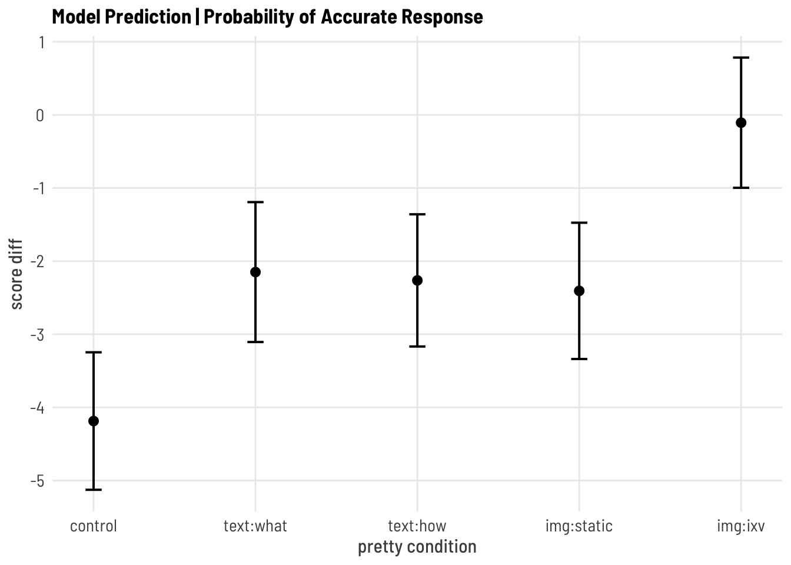
$order
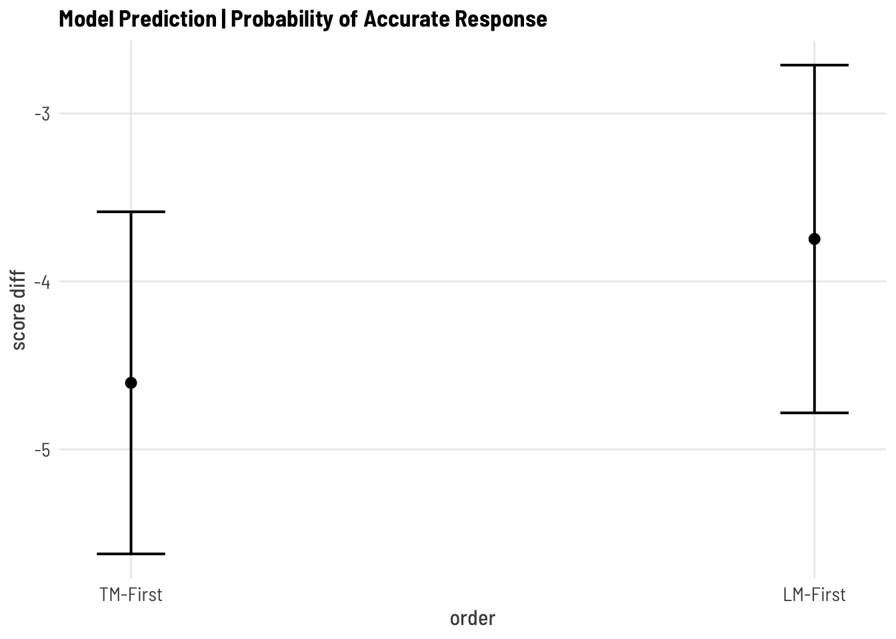
$tm_scenarios
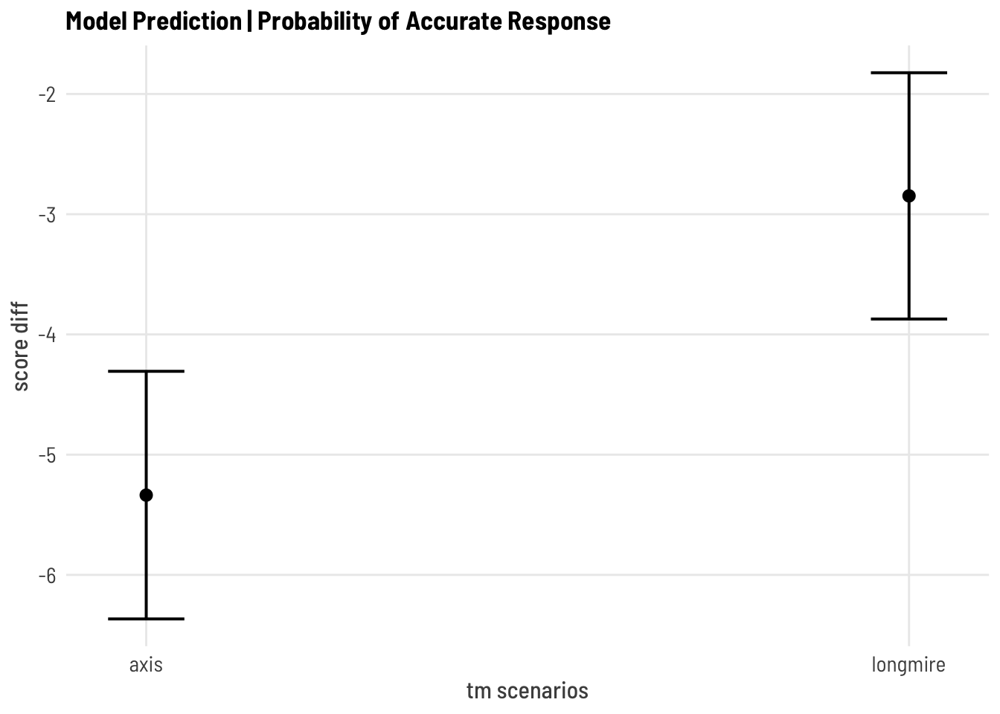
CODE
#PLOT MODEL PREDICTION# plot_model(m, type = "pred") # plot_model(m, type = "eff") # ylim(0,1) + # labs(# title = "Model Prediction | Probability of Accurate Response",# subtitle = "Impasse increases Probability of Correct Response"# )## | PLOT INTERACTIONS# plot_model(m.C.O.S, type="int",# show.intercept = TRUE,# show.values = TRUE,# title = "Model Prediction | Probability of Accurate Response")#
[no] MIXED EFFECTS LOGISTIC REGRESSION –> RAW SCORE
Fit mixed effects logistic regression model to test effect of CONDITION ORDER, and SCENARIO on probability of correct response just in TRIANGULAR graph
#probability control = plogis(intercept)#probability impasse = plogis(intercept + coefficient)#FROM merTools#setup empty df newdata <- df_i %>% dplyr::select(graph, pretty_condition, order, scenario, subject, q)#make predictionspreds <-predictInterval(m, newdata = newdata,which ="fixed", #full, fixed or random for those onlytype ="probability", #linear.predictionstat ="median",n.sims =1000,level =0.80) #width of prediction interval
Warning in predictInterval(m, newdata = newdata, which = "fixed", type = "probability", : newdata is tbl_df or tbl object from dplyr package and has been
coerced to a data.frame
Warning: executing %dopar% sequentially: no parallel backend registered
CODE
#join predictions to the new dataframepreds <-cbind(newdata, preds)#summarize(summ_preds <- preds %>% dplyr::select(graph, pretty_condition, scenario, order, fit, lwr, upr) %>%group_by(graph, pretty_condition, scenario, order) %>% dplyr::summarise(median =median(fit),lower =median(lwr),upper =median(upr) ))
## | PLOT PREDICTIONS#SJPLOT | MODEL | PROBABILITIESplot_model(m, type="int",show.intercept =TRUE,show.values =TRUE,title ="Model Prediction | Probability of Accurate Response")
[[1]]
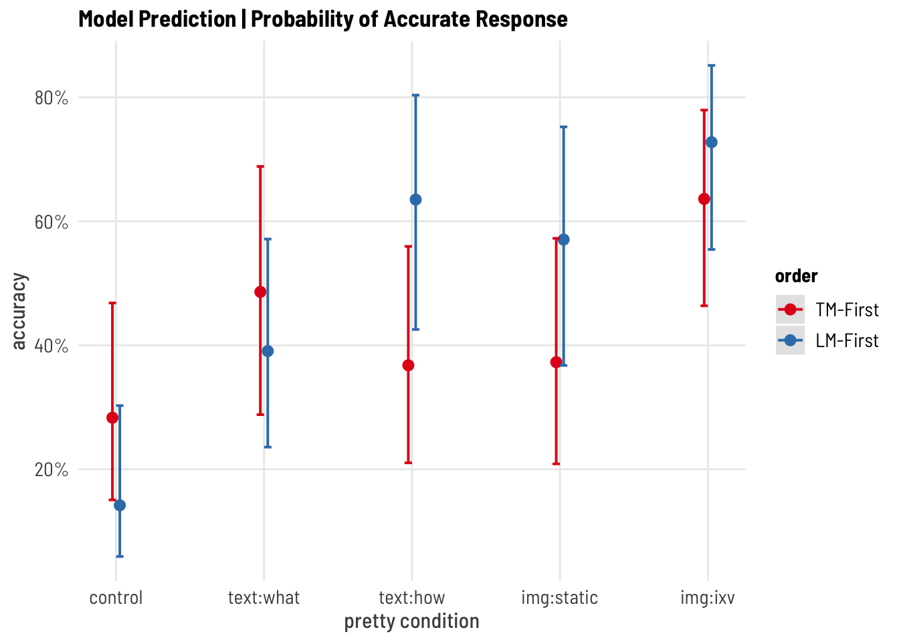
[[2]]
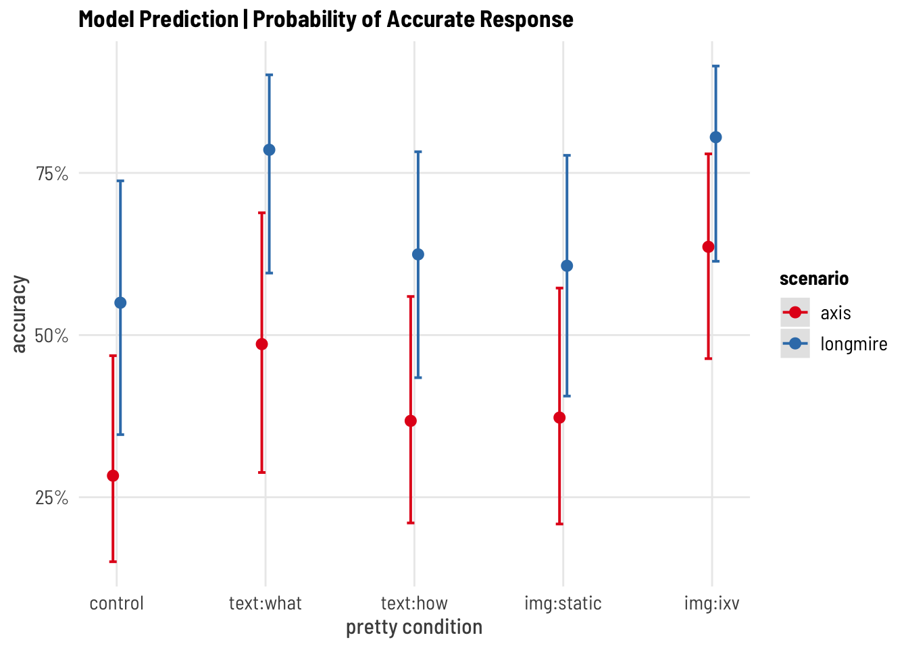
[[3]]
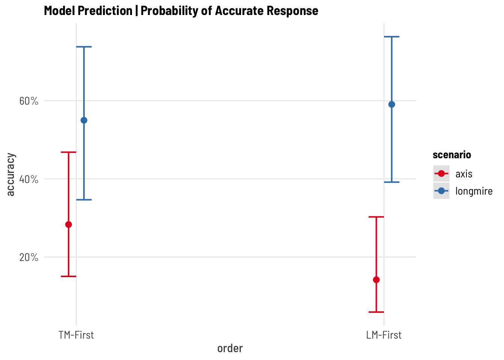
[[4]]
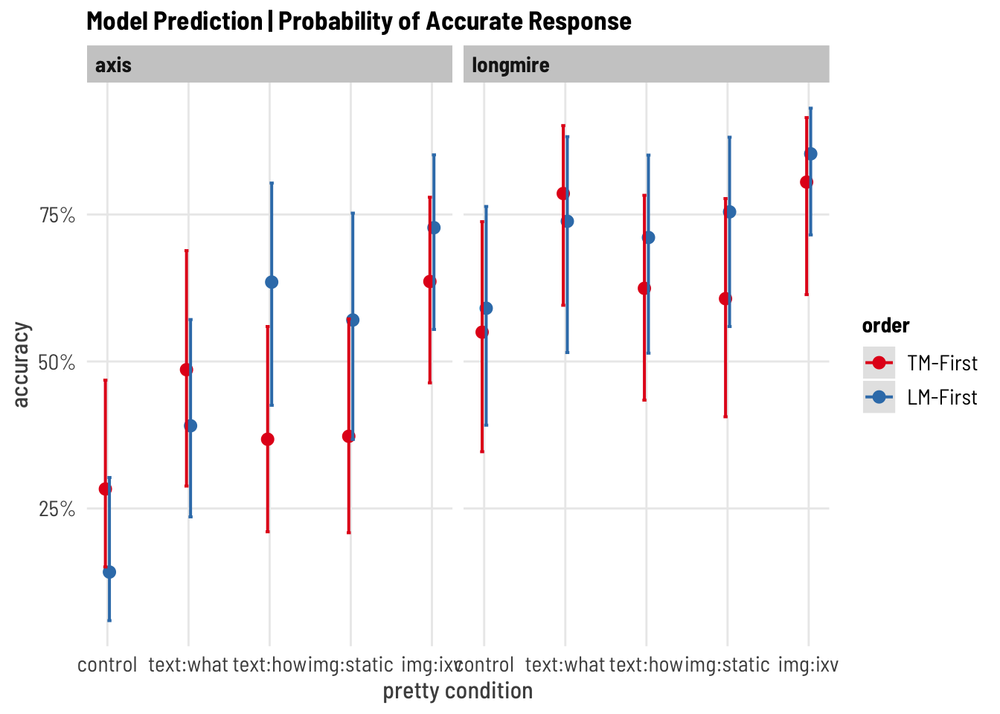
CODE
#PLOT MODEL PREDICTION# plot_model(m, type = "pred") # plot_model(m, type = "eff") # ylim(0,1) + # labs(# title = "Model Prediction | Probability of Accurate Response",# subtitle = "Impasse increases Probability of Correct Response"# )#TODO EMMEANS for the estimated marginal means OR USE IXN PLOT
[violates normality of residuals, and has issues with colinearity] ##### Fit Model
CODE
# empty model m0 <-lm( triangular_score ~1, data = df_s)# CONDITION model m.C <-lm( triangular_score ~ pretty_condition, data = df_s)paste("Condition model better fit than empty?")
[1] "Condition model better fit than empty?"
CODE
test_lrt(m0,m.C)
# Likelihood-Ratio-Test (LRT) for Model Comparison (OLS-estimator)
Name | Model | df | df_diff | Chi2 | p
--------------------------------------------
m0 | lm | 2 | | |
m.C | lm | 6 | 4 | 24.94 | < .001
CODE
# car::Anova(m.C) #main effects condition# CONDITION + ORDER + SCENARIO model m.COS <-lm( triangular_score ~ pretty_condition*tm_scenarios*order, data = df_s)paste("Condition*Order*Scenario model better fit than interactions model?")
[1] "Condition*Order*Scenario model better fit than interactions model?"
CODE
test_lrt(m.COS,m.C)
# Likelihood-Ratio-Test (LRT) for Model Comparison (OLS-estimator)
Name | Model | df | df_diff | Chi2 | p
---------------------------------------------
m.COS | lm | 21 | | |
m.C | lm | 6 | -15 | 44.97 | < .001
CODE
car::Anova(m.COS, type =3) #main effects condition, order scenario, scenario
#no interactions were significant; weak main effects# #MAIN EFFECTS ONLY MODEL# m.COS <- lm( triangular_score ~ pretty_condition+order+tm_scenarios, data = df_s)# paste("Condition+Order+Scenario model better fit than interaction model?")# test_lrt(m.C.O.S,m.COS)
The best fitting model includes main effects CONDITION, ORDER and SCENARIO.
Describe
CODE
# best modelm <- m.COS#::::::::: PRINT MODEL print("PREDICTOR MODEL")
#:::::::: MANUAL ONE-SIDED SIGTEST #note: anova and chi square are always one-tailed, but that is independent of being one-sided#https://www.ibm.com/support/pages/can-one-get-one-tailed-tests-logistic-regression-dividing-significance-levels-half# one-sided (right tail) z test for B COEFFICIENT#SANITY CHECK 2-tailed test should match the model output#NOTE ... NEED TO DO THIS FOR _EACH_ COEFFICIENT# tt <- 2*pnorm(summary(m)$coefficients[2,3], lower.tail = F)# paste("p value for two-tailed test, null B = 0 : ",round(tt,5))# ot <- pnorm(summary(m)$coefficients[2,3], lower.tail = F)# paste("BUT we want a one directional, null: B <= 0: ",round(ot,5))#:::::::: INTERPRET COEFFICIENTStidy(m, conf.int =TRUE, conf.level =0.95, conf.method ="Wald")
## | PLOT PREDICTIONS#SJPLOT | MODEL | PROBABILITIESplot_model(m, type="eff",show.intercept =TRUE,show.values =TRUE,title ="Model Prediction | Probability of Accurate Response")
$pretty_condition
$tm_scenarios
$order
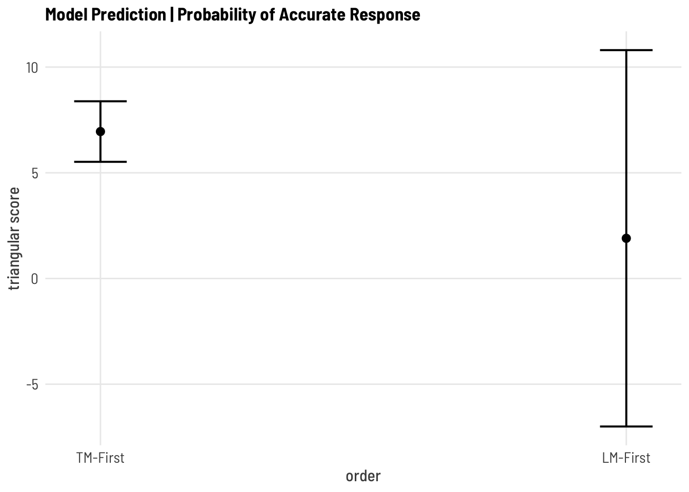
CODE
#PLOT MODEL PREDICTION# plot_model(m, type = "pred") # plot_model(m, type = "eff") # ylim(0,1) + # labs(# title = "Model Prediction | Probability of Accurate Response",# subtitle = "Impasse increases Probability of Correct Response"# )## | PLOT INTERACTIONSplot_model(m.C.O.S, type="int",show.intercept =TRUE,show.values =TRUE,title ="Model Prediction | Probability of Accurate Response")
H2 | Realizing Computational Efficiency —— TIME EFFICIENCY
Setup
CODE
df_s <- df_subjects df_i <- df_items
Visualize
CODE
library(ggpubr)ggboxplot(df_s, x ="pretty_condition", y ="time_diff", color ="pretty_condition", # palette = c("#00AFBB", "#E7B800", "#FC4E07"),# order = c("ctrl", "trt1", "trt2"),title ="DIFFERENCE IN TIME by Condition",ylab ="TRI - LINEAR TIME (seconds)", xlab ="Condition") +geom_hline(yintercept =0, color ="black") +geom_jitter( aes(color = pretty_condition), width =0.15, alpha =0.5) +# facet_wrap(order~ tm_scenarios) +easy_remove_legend() +theme_clean()
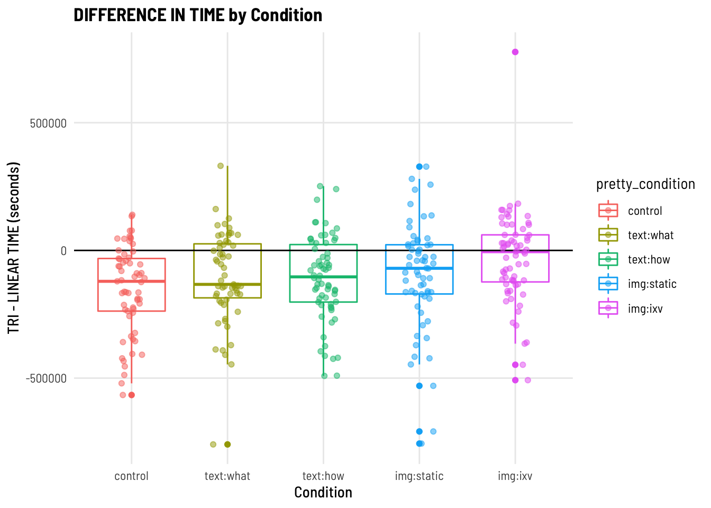
Model Response time for CORRECT answers
Is the TRIANGULAR graph FASTER for correct answers? (i.e. computational efficiency)
CODE
#GET ONLY CORRECT ITEMS in TEST phase df <- df_items %>%filter(q %nin%c(1,2,3,4,5)) %>%filter(score ==1)table (df$pretty_condition)
control text:what text:how img:static img:ixv
677 754 827 777 934
CODE
# Box plots# ++++++++++++++++++++ggplot( data = df, aes( x = pretty_condition, y = rt_sec, color = graph )) +geom_boxplot(position =position_dodge())
CODE
# geom_point( alpha = 0.2, position = position_dodge(width = 2))## Does GRAPH predict rt_sec for correct items?m <-lmer( log(rt_sec) ~ graph + (1|q), data = df)summary(m)
Linear mixed model fit by REML. t-tests use Satterthwaite's method [
lmerModLmerTest]
Formula: log(rt_sec) ~ graph + (1 | q)
Data: df
REML criterion at convergence: 6398
Scaled residuals:
Min 1Q Median 3Q Max
-2.995 -0.716 0.030 0.670 4.072
Random effects:
Groups Name Variance Std.Dev.
q (Intercept) 0.000729 0.027
Residual 0.292173 0.541
Number of obs: 3969, groups: q, 10
Fixed effects:
Estimate Std. Error df t value Pr(>|t|)
(Intercept) 3.43e+00 1.45e-02 1.82e+01 237.00 <2e-16 ***
graphtriangular 6.45e-03 1.72e-02 3.96e+03 0.37 0.71
---
Signif. codes: 0 '***' 0.001 '**' 0.01 '*' 0.05 '.' 0.1 ' ' 1
Correlation of Fixed Effects:
(Intr)
graphtrnglr -0.548
CODE
car::Anova(m)
Analysis of Deviance Table (Type II Wald chisquare tests)
Response: log(rt_sec)
Chisq Df Pr(>Chisq)
graph 0.14 1 0.71
CODE
plot_model(m, type ="pred")
Model has log-transformed response. Back-transforming predictions to original response scale. Standard errors are still on the log-scale.
$graph
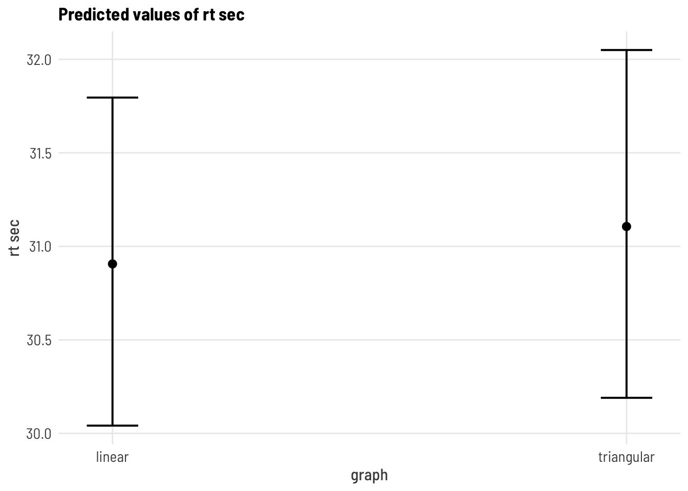
A mixed log-linear model predicting response time by GRAPH for only CORRECT items in the test phase (i.e. without scaffolding text or images) indicates that there is not a significant difference between response times for linear and orthogonal graphs.
Model Response time for by ACCURACY on TRIANGLE graph (Test Phase)
Are correct answers FASTER than incorrect answers for the TRIANGULAR graph? (i.e. computational inefficiency of mental projection/transformation)
CODE
#GET ONLY CORRECT ITEMS in TEST phase df <- df_items %>%filter(q %nin%c(1,2,3,4,5)) %>%filter(graph=="triangular")table (df$pretty_condition)
control text:what text:how img:static img:ixv
610 590 660 619 680
CODE
# ++++++++++++++++++++ggplot( data = df, aes( x = pretty_condition, y = rt_sec, color = score )) +geom_boxplot(position =position_dodge())
CODE
# geom_point( alpha = 0.2, position = position_dodge(width = 2))gf_histogram(~log(rt_sec), data = df) %>%gf_facet_grid(score ~ .)
CODE
## Does ACCURACY predict rt_sec for correct items?m <-lmer( log(rt_sec) ~ accuracy + (1|q), data = df)summary(m)
Linear mixed model fit by REML. t-tests use Satterthwaite's method [
lmerModLmerTest]
Formula: log(rt_sec) ~ accuracy + (1 | q)
Data: df
REML criterion at convergence: 5920
Scaled residuals:
Min 1Q Median 3Q Max
-4.929 -0.656 0.028 0.683 3.680
Random effects:
Groups Name Variance Std.Dev.
q (Intercept) 0.00515 0.0718
Residual 0.37835 0.6151
Number of obs: 3159, groups: q, 10
Fixed effects:
Estimate Std. Error df t value Pr(>|t|)
(Intercept) 3.7155 0.0283 14.2947 131.3 <2e-16 ***
accuracy1 -0.2773 0.0222 3149.8835 -12.5 <2e-16 ***
---
Signif. codes: 0 '***' 0.001 '**' 0.01 '*' 0.05 '.' 0.1 ' ' 1
Correlation of Fixed Effects:
(Intr)
accuracy1 -0.455
Model has log-transformed response. Back-transforming predictions to original response scale. Standard errors are still on the log-scale.
$accuracy
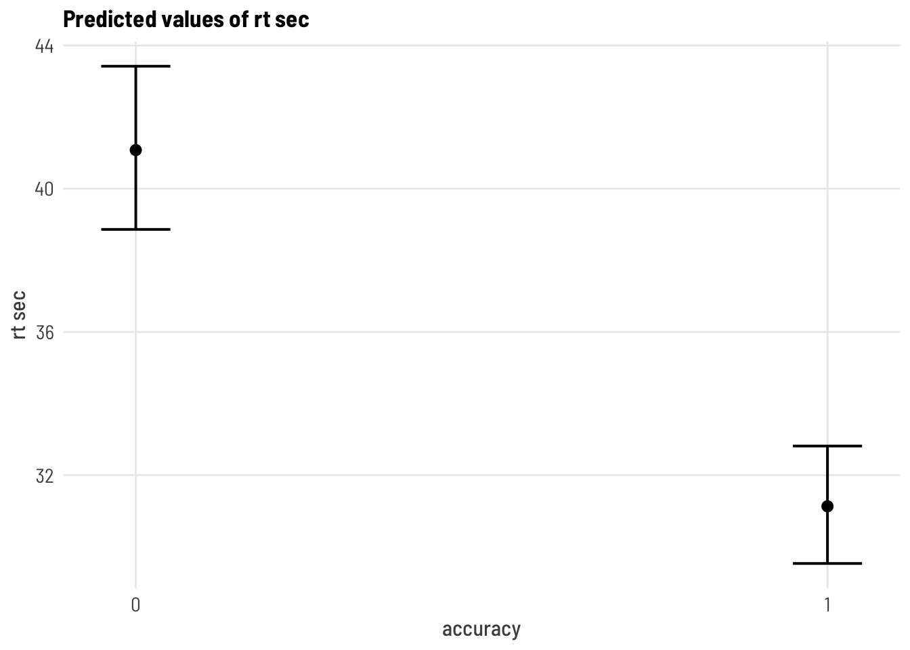
A mixed log-linear model predicting response time by GRAPH for only CORRECT items in the test phase (i.e. without scaffolding text or images) indicates that there is not a significant difference between response times for linear and orthogonal graphs.
!! USE THIS H3 | The Effectiveness of Scaffolding
Hypothesis All of the designs offered by participants in Study 1 are promising. We expect that only a small amount of scaffolding (a little nudge) will be required to help readers correctly interpret the graph. We predict that learners with (any form of) scaffolding will perform better with the TM than readers in the CONTROL condition.
## HISTOGRAMgf_histogram( ~ triangular_score, fill =~pretty_condition, binwidth =1, data = df_s) %>%gf_facet_grid(pretty_condition ~ .)
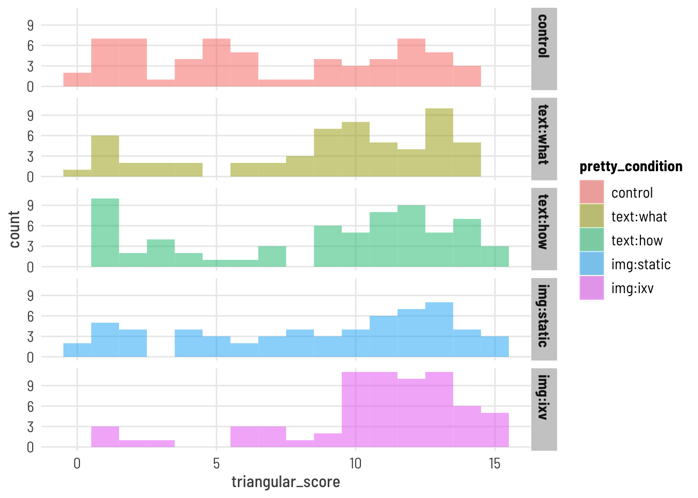
CODE
## MEDIANSggbetweenstats( y = triangular_score, x = pretty_condition, data = df_s, type ="nonparametric", var.equal =FALSE,pairwise.comparisons =TRUE,pairwise.display ="significant",p.adjust.method ="none")
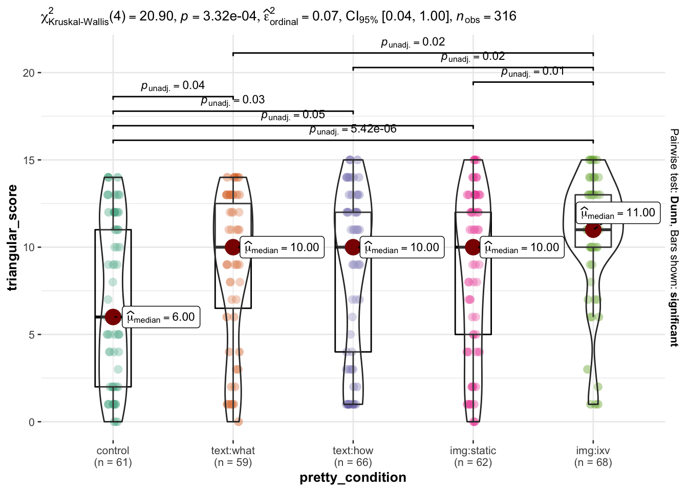
CODE
# Box plots# ++++++++++++++++++++# Plot weight by group and color by grouplibrary("ggpubr")ggboxplot(df_s, x ="pretty_condition", y ="linear_score", color ="pretty_condition", # palette = c("#00AFBB", "#E7B800", "#FC4E07"),# order = c("ctrl", "trt1", "trt2"),title ="LINEAR Graph Scores by Condition",subtitle ="No effect of condition, order or scenario",ylab ="Linear Score [0,15]", xlab ="Condition") +geom_jitter( aes(color = pretty_condition), width =0.15, alpha =0.5) +facet_wrap(order~ tm_scenarios)+easy_remove_legend() +theme_clean()
CODE
# Box plots# ++++++++++++++++++++# Plot weight by group and color by grouplibrary("ggpubr")ggboxplot(df_s, x ="pretty_condition", y ="triangular_score", color ="pretty_condition", # palette = c("#00AFBB", "#E7B800", "#FC4E07"),# order = c("ctrl", "trt1", "trt2"),title ="TRIANGULE Graph Scores by Condition",subtitle ="Clear effect of condition, possible ixn scenario",ylab ="Triangular Score [0,15]", xlab ="Condition") +geom_jitter( aes(color = pretty_condition), width =0.15, alpha =0.5) +facet_wrap(order~ tm_scenarios)+easy_remove_legend() +theme_clean()
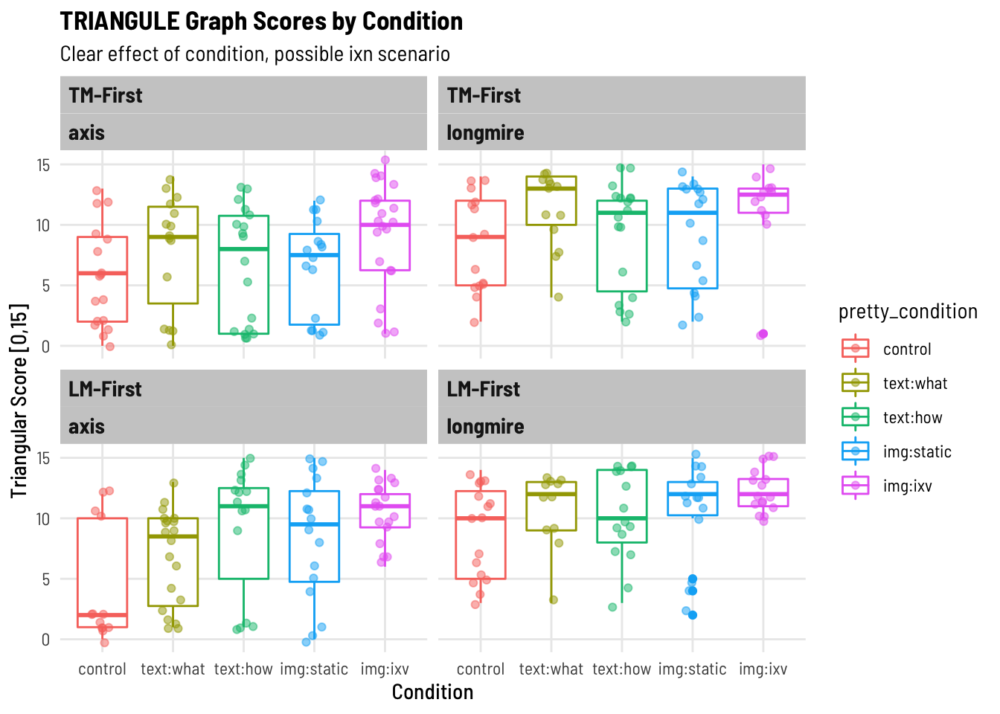
CODE
#:::::::: STACKED PROPORTIONAL BAR CHARTdf_i %>%ggplot(data = .,mapping =aes(x = pretty_condition,fill = accuracy)) +geom_bar(position ="fill" ) +#,color = "black") +scale_fill_brewer(palette ="Set1") +facet_wrap(order~graph) +labs(title ="Accuracy by Graph and Order",x ="Condition",subtitle="Across graph orders, Accuracy is higher on the LINEAR than TRIANGULAR graph.")
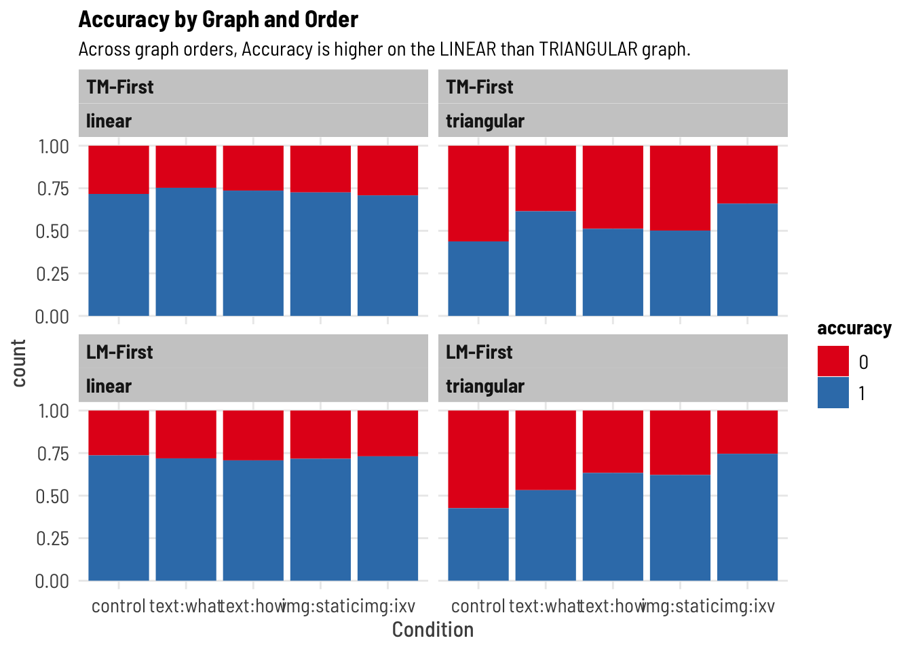
CODE
#:::::::: STACKED PROPORTIONAL BAR CHARTdf_i %>%ggplot(data = .,mapping =aes(x = pretty_condition,fill = accuracy)) +geom_bar(position ="fill" ) +#,color = "black") +scale_fill_brewer(palette ="Set1") +facet_wrap(scenario ~ graph) +labs(title ="Accuracy by Graph and Scenario",x ="Condition",subtitle="Accuracy is higher on the LINEAR than TRIANGULAR graph; much lower for TM = AXIS scenario.")
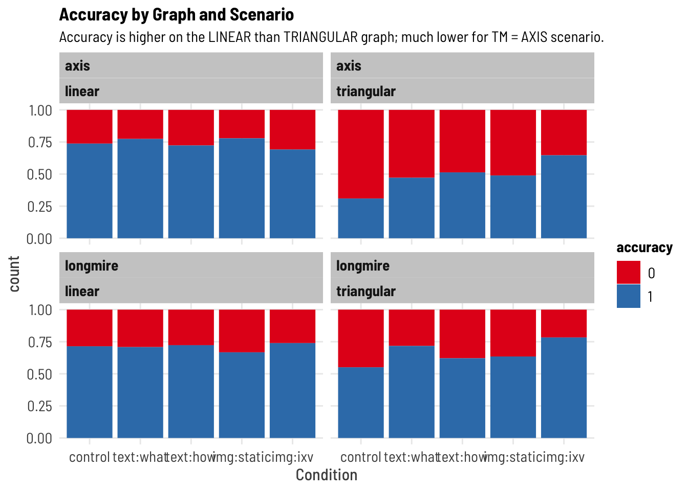
CODE
# ##VERTICAL RAINCLOUD USING GGDISTR# ggplot(df_long, aes(x = graph, y = score,# fill = graph) ) + # ggdist::stat_halfeye(# side = "left",# justification = 1.1,# width = 1, # point_colour = NA# ) + # geom_boxplot(# inherit.aes = FALSE, #supress fill# mapping = aes(x=graph, y = score),# width = .15, # outlier.shape = NA# ) + # geom_point(# inherit.aes = FALSE, #supress fill# mapping = aes(x=graph, y = score, color = graph),# size = 1.3,# alpha = .3,# position = position_jitter( # seed = 1, width = .05# )) + labs( # title = "Distribution of scores in CONTROL condition", # x = "Condition", y = "Score (# correct)") +# theme(legend.position = "blank") + # coord_cartesian(xlim = c(0.5, NA), clip = "off")#DISTRIBUTION OF SCORE DIFFERENCEgf_dhistogram(~score_diff, fill =~pretty_condition, data = df_s) %>%gf_facet_grid(pretty_condition ~ order) +xlim(-13,5) +labs(title ="Distribution of paired score differences by CONDITION and ORDER") +easy_remove_legend()
#DISTRIBUTION OF SCORE DIFFERENCEgf_dhistogram(~score_diff, fill =~pretty_condition, data = df_s) %>%gf_facet_grid(pretty_condition ~ tm_scenarios) +xlim(-13,5) +labs(title ="Distribution of paired score differences by CONDITION and TM SCENARIO") +easy_remove_legend()
For participants in the CONTROL condition, total absolute scores for the LINEAR graph (n = 316) range from 2 to 15 with a mean score of (M = 10.95, SD = 2.13).
For participants in the CONTROL condition, total absolute scores for the TRIANGULAR graph (n = 316) range from 0 to 15 with a mean score of (M = 8.77, SD = 4.45).
CODE
#PLOT PAIRED DATAgrouped_ggwithinstats(grouping.var = pretty_condition,data = df_long,x = graph,y = score, type ="nonparametric", #parametric, robust, bayesannotation.args =list(title ="Effect of Condition"),)
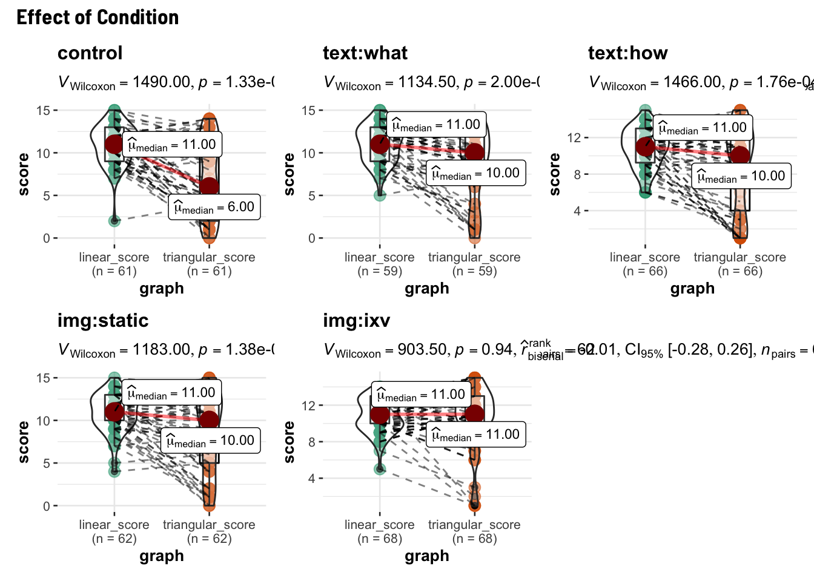
USE THIS MIXED EFFECTS LOGISTIC REGRESSION –> RAW SCORE
Fit mixed effects logistic regression model to test effect of GRAPH, ORDER, and SCENARIO on probability of correct response [just in the control condition]
#probability control = plogis(intercept)#probability impasse = plogis(intercept + coefficient)#FROM merTools#setup empty df newdata <- df_i %>% dplyr::select(graph, pretty_condition, order, scenario, subject, q)#make predictionspreds <-predictInterval(m, newdata = newdata,which ="fixed", #full, fixed or random for those onlytype ="probability", #linear.predictionstat ="median",n.sims =1000,level =0.80) #width of prediction interval
Warning in predictInterval(m, newdata = newdata, which = "fixed", type = "probability", : newdata is tbl_df or tbl object from dplyr package and has been
coerced to a data.frame
CODE
#join predictions to the new dataframepreds <-cbind(newdata, preds)#summarize(summ_preds <- preds %>% dplyr::select(graph, pretty_condition, scenario, order, fit, lwr, upr) %>%group_by(graph, pretty_condition, scenario, order) %>% dplyr::summarise(median =median(fit),lower =median(lwr),upper =median(upr) ))
# A tibble: 40 × 7
# Groups: graph, pretty_condition, scenario [20]
graph pretty_condition scenario order median lower upper
<fct> <fct> <fct> <fct> <dbl> <dbl> <dbl>
1 linear control axis TM-First 0.773 0.484 0.927
2 linear control axis LM-First 0.766 0.473 0.923
3 linear control longmire TM-First 0.747 0.448 0.915
4 linear control longmire LM-First 0.738 0.436 0.911
5 linear text:what axis TM-First 0.783 0.495 0.930
6 linear text:what axis LM-First 0.777 0.489 0.928
7 linear text:what longmire TM-First 0.757 0.460 0.919
8 linear text:what longmire LM-First 0.750 0.449 0.917
9 linear text:how axis TM-First 0.773 0.483 0.925
10 linear text:how axis LM-First 0.765 0.472 0.923
# … with 30 more rows
Inference TODO UPDATE
Visualize
CODE
## | PLOT PARAMETERS #SJPLOT | MODEL | ODDS RATIOplot_model(m, vline.color ="red", show.intercept =TRUE, show.values =TRUE,p.threshold =0.1, #manually adjust to account for directional testci.lvl =0.90 ) +#manually adjusted for directional test labs(title ="Model Estimate | Odds Ratio",subtitle ="",x ="Condition")
## | PLOT PREDICTIONS#SJPLOT | MODEL | PROBABILITIESp <-plot_model(m, type="int",show.intercept =TRUE,show.values =TRUE,title ="Model Prediction | Probability of Accurate Response")p[[1]] + p[[2]] + p[[3]]
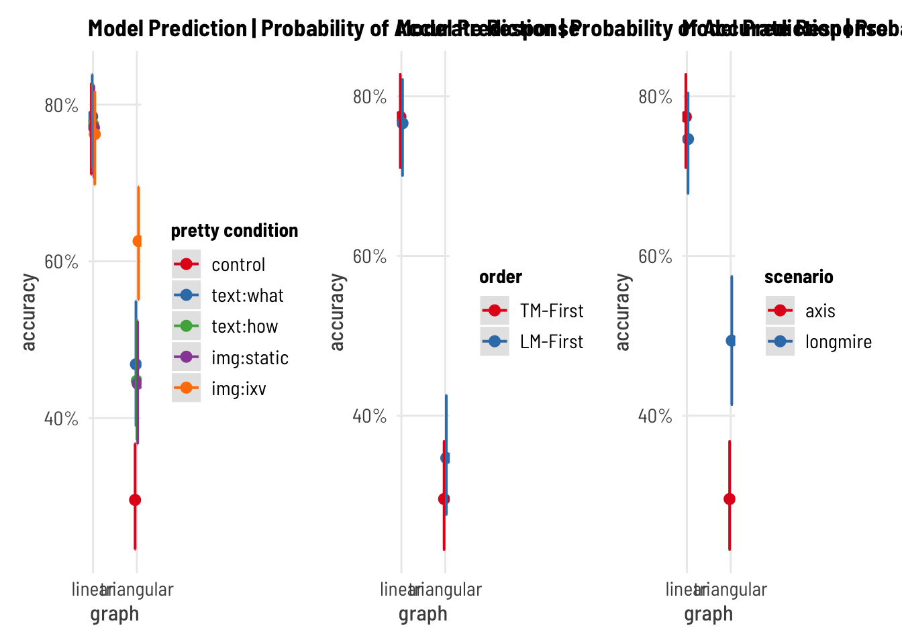
CODE
#PLOT MODEL PREDICTION# plot_model(m, type = "pred")# plot_model(m, type = "eff")# ylim(0,1) + # labs(# title = "Model Prediction | Probability of Accurate Response",# subtitle = "Impasse increases Probability of Correct Response"# )
ggbarstats( x = draw_type, y =pretty_condition , data = df_s,title ="Drawing Type by Condition")
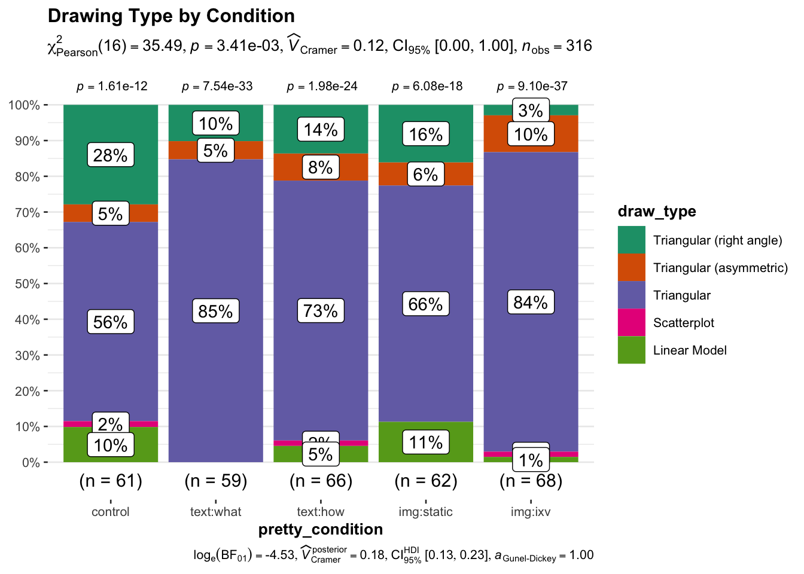
CODE
#drawing type by order grouped_ggbarstats( x = draw_type, y =pretty_condition , grouping.var = order, data = df_s,annotation.args =list(title ="Drawing type BY ORDER" ))
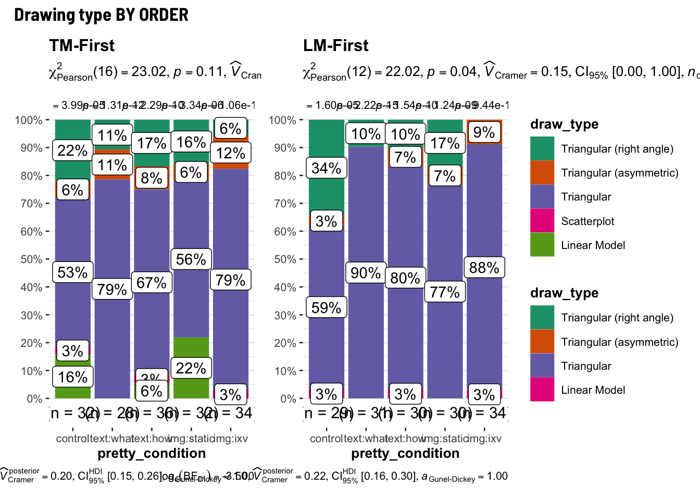
CODE
#drawing type by tm-scenario grouped_ggbarstats( x = draw_type, y =pretty_condition , grouping.var = tm_scenarios, data = df_s,annotation.args =list(title ="Drawing type BY tm-scenario" ))
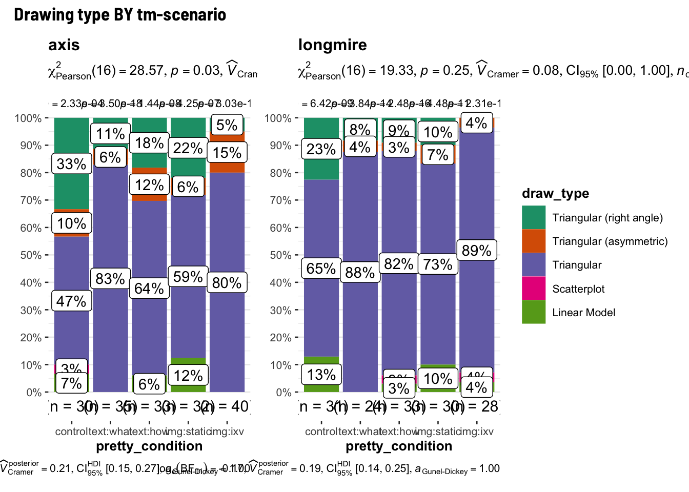
MULTINOMIAL REGRESSION
Does condition affect the type of drawing produced?
Fit Model [multinom]
CODE
#https://www.elff.eu/software/mclogit/manual/mblogit/#"baseline category logit" model matches multinom()#check reference level print("Categories (first is reference)")
# weights: 30 (20 variable)
initial value 508.582380
iter 10 value 265.311738
iter 20 value 262.186739
iter 30 value 262.064683
iter 40 value 262.063130
final value 262.063125
converged
CODE
mb <-mblogit(draw_type ~ pretty_condition , data = df_s)
Can't calculate log-loss.
Can't calculate proper scoring rules for ordinal, multinomial or cumulative link models.
# Indices of model performance
AIC | BIC | R2 | R2 (adj.) | RMSE | Sigma
-----------------------------------------------------
564.126 | 639.241 | 0.071 | 0.067 | 0.291 | 1.331
CODE
paste("PROBABILITIES")
[1] "PROBABILITIES"
CODE
#PREDICT METHODnewdata <- df_i %>% dplyr::select(pretty_condition, subject)preds <-predict(m, newdata = newdata, type ="probs")preds <-cbind(newdata, preds)#lengthen data frame to handle multinomialpreds <- preds %>% dplyr::select(-subject) %>%#marginalize over subject and qpivot_longer(cols =!pretty_condition,values_to ="preds",names_to ="drawing_type",)(p <- preds %>%group_by(pretty_condition, drawing_type ) %>% dplyr::summarise(median =median(preds),se =sd(preds)/sqrt(n()),lwr = median -1.96*se,upr = median +1.96*se))
# A tibble: 25 × 6
# Groups: pretty_condition [5]
pretty_condition drawing_type median se lwr upr
<fct> <chr> <dbl> <dbl> <dbl> <dbl>
1 control Linear Model 9.83e- 2 0 9.83e- 2 9.83e- 2
2 control Scatterplot 1.64e- 2 0 1.64e- 2 1.64e- 2
3 control Triangular 5.57e- 1 0 5.57e- 1 5.57e- 1
4 control Triangular (asymmetric) 4.92e- 2 0 4.92e- 2 4.92e- 2
5 control Triangular (right angle) 2.79e- 1 0 2.79e- 1 2.79e- 1
6 text:what Linear Model 1.10e- 8 0 1.10e- 8 1.10e- 8
7 text:what Scatterplot 2.17e-10 0 2.17e-10 2.17e-10
8 text:what Triangular 8.47e- 1 0 8.47e- 1 8.47e- 1
9 text:what Triangular (asymmetric) 5.08e- 2 0 5.08e- 2 5.08e- 2
10 text:what Triangular (right angle) 1.02e- 1 0 1.02e- 1 1.02e- 1
# … with 15 more rows
CODE
##DRAWS METHOD# GENERATE draws from model# draws <- df_i %>%# data_grid(pretty_condition, subject, q) %>% # add_fitted_draws(Bmm.cat.CrSQ,# # n = 100,# # dpar = TRUE,# # transform = TRUE, #gives prob%, otherwise OR# re_formula = NA)# # draws %>% write_rds(file = "analysis/SGC3A/models/draws/draws_BB.catCrSQ.rds")# # #OR load from file# # draws <- read_rds(file = "analysis/SGC3A/models/draws/draws_BB.catCrSQ.rds")# # # SUMMARIZE draws from model# (k <- kable(draws %>%# dplyr::select(pretty_condition, .category, .value) %>%# group_by(pretty_condition, .category) %>%# median_hdci(.value), digits = 4, col.names =# c("Condition","Category", "Probability","Lower Cred.I","Upper Cred.I", "CI Width", "Point Type", "Interval Type")) %>%# kable_styling())
INFERENCE
Visualize
CODE
## | PLOT PARAMETERS #SJPLOT | MODEL | ODDS RATIO# plot_model(m, vline.color = "red", # show.intercept = TRUE, # show.values = TRUE,# p.threshold = 0.1, #manually adjust to account for directional test# ci.lvl = 0.90 ) + #manually adjusted for directional test # labs(title = "Model Estimate | Odds Ratio",# subtitle = "",# x = "Condition")#EASYSTATS | MODEL | ODDS RATIOresult <-model_parameters(m, exponentiate =TRUE, component ="all")plot(result, show_intercept =TRUE, show_labels =TRUE)
CODE
# + theme_clean()## | PLOT PREDICTIONS#SJPLOT | MODEL | PROBABILITIESplot_model(m, type="eff",show.intercept =TRUE,show.values =TRUE,title ="Model Prediction | Probability of Drawing Type",axis.title =c("Condition","Probability of Drawing Type"))
$pretty_condition
CODE
#::::: GGDIST POSTERIOR PROBABILITY OF RESPONSE##WORKING# https://mjskay.github.io/ggdist/reference/stat_slab.html## VIS probability of correct response#TAKES A REALLY LONG TIME#1 | get draws# draws <- df_i %>%# data_grid(pretty_condition, ospan_split, subject, q) %>%# add_epred_draws(m,# # ndraws = 100, # n = 100,# # dpar = TRUE,# transform = TRUE, #gives prob%, otherwise OR# re_formula = NA)# # draws %>% write_rds(file = "analysis/SGC3A/models/draws/draws_Bmm.catCOrSQ_OPSAN.rds")# # #OR load from file# # draws <- read_rds(file = "analysis/SGC3A/models/draws/draws_Bmm.catCOrSQ_OPSAN.rds")# # #2| VISUALIZE PREDICTIONS | GGDIST# ##TODO figure out height normalization.# ##do it with much smaller number of draws # #TODO adjust bandwidth/smoothing? + put on same line + # #TAKES A REAAALY LONG TIME# # d <- # # d <- draws %>% sample_n(10) %>% # ggplot(aes(x = .epred, y = pretty_condition, fill = ospan_split)) +# stat_slab(width = c(.95), alpha = 0.5, normalize="xy") +# facet_wrap(~.category) +# # #normalize = all, panels, xy, groups, none# xlim(0,1) + labs(# title = "Model Predicted Probability of Correct Response",# x = "probability of correct response",# y = "Interpretation"# ) + theme_clean() #+ ggeasy::easy_remove_legend() + ggeasy::easy_remove_y_axis()# # # #TO PLOT ON THE SAME LINE, INCLUDE Y = 0 in aes and ggeasy::remove_y_axis()# # # # # # ggsave(d, filename = "figures/sgc3a_BBm.cat.CrSQ_lab_posterior.svg", width = 6, height =4)# d
---subtitle: 'Study SGC2 | Hypothesis Testing'---\newpage# Hypothesis Testing {#sec-SGC2-hypotesting}## TODOQ3 looks nondiscriminant perhaps remove this from analysis*The purpose of this notebook is test the hypotheses that determined the design of the SGC2 study.*1. **The Need for Scaffolding:** Learners without scaffolding (control) will perform better with the LM than TM\2. **The Effectiveness of Scaffolding:** Learners with (any form of) scaffolding will perform better with the TM than LM (replication of \[12\]).\3. **Graph-Order as Scaffolding:** Based on observations in Study One we expect that graph-order will act as a scaffold. Learners who solve problems with the LM graph first will perform better on the TM (relative to TM-first learners) as their attention will be drawn to the salient differences between the graphs.\<br>```{r}#| label: SETUP#| warning : false#| message : false#UTILITIESlibrary(Hmisc) # %nin% operatorlibrary(broom) #tidy model outputlibrary(broom.mixed) #tidy mixed modelslibrary(mosaic) #favstatslibrary(svglite) #saving plots as svglibrary(distributional)#VISUALIZATION# library(ggpubr) #arrange plots# library(cowplot) #arrange shift function plotslibrary(ggformula) #easy graphs# # library(vcd) #mosaic plots# # library(vcdExtra) #mosaic plotslibrary(kableExtra) #printing tableslibrary(sjPlot) #visualize model coefficientslibrary(ggdist) #uncertainty vizlibrary(modelr) #needed for ggdistlibrary(gghalves) # plots. in halflibrary(ggbeeswarm) # violin plot stuffslibrary(statsExpressions)library(ggstatsplot) #plots with statslibrary(modelsummary) #latex tables for models!library(ggeasy) #shortcuts #MODELLING# library(rstatix) #helpful testing functions incl wilcoxon, etclibrary(report) #easystats reportinglibrary(see) #easystats visualizationlibrary(performance) #easystats model diagnosticslibrary(parameters) #easystats model summary and vis# library(qqplotr) #confint on qq plot# library(gmodels) #contingency table and CHISQR# library(equatiomatic) #extract model equation# library(pscl) #zeroinfl / hurdle models library(lme4) #mixed effects modelslibrary(lmerTest) #for CIs in glmerlibrary(merTools) #predictInterval# library(ggeffects) #visualization log regr models#MULTINOMIAL library(nnet) #multinomial logistic regression [not mixed] #no p valueslibrary(mclogit) #frequentist mixed multinomial logistic regression [mblogit] #gives p values#BAYESIANlibrary(cmdstanr) #executing stanlibrary(brms) #bayesian mixed multinomials [+ other bayesian reg models]library(bayestestR) library(tidybayes)library(posterior)library(tidyverse) #ALL THE THINGS#OUTPUT OPTIONSlibrary(dplyr, warn.conflicts =FALSE)options(dplyr.summarise.inform =FALSE)options(ggplot2.summarise.inform =FALSE)options(scipen=1, digits=3)#GRAPH THEMEING# theme_set(theme_minimal()) # Custom ggplot theme to make pretty plots# Get the font at https://fonts.google.com/specimen/Barlow+Semi+Condensedtheme_clean <-function() {theme_minimal(base_family ="Barlow Semi Condensed") +theme(panel.grid.minor =element_blank(),plot.title =element_text(family ="BarlowSemiCondensed-Bold"),axis.title =element_text(family ="BarlowSemiCondensed-Medium"),strip.text =element_text(family ="BarlowSemiCondensed-Bold",size =rel(1), hjust =0),strip.background =element_rect(fill ="grey80", color =NA))}set_theme(base =theme_clean())```**Research Questions**In SGC2 we compare learner performance on the linear and triangular model graphs by testing the effectiveness of 4 scaffolds and by seeking to replicate the Qiang et.al (2014) finding that after 20 minutes of video training, students perform faster and more accurately with the unconventional TM than the conventional Linear Model (LM). Will our participants show similar performance on the TM with scaffolds rather than formal instruction? Further, will engagement with the TM in a reading task be sufficient for students to reproduce the graph in a subsequent drawing task?**Hypotheses**1. Learners without scaffolding (control) will perform better with the LM than TM2. Learners with (any form of) scaffolding will perform better with the TM than LM (replication of \[12\]).3. Based on observations in Study One we expect that graph-order will act as a scaffold. Learners who solve problems with the LM graph first will perform better on the TM (relative to TM-first learners) as their attention will be drawn to the salient differences between the graphs.```{r}#| label: IMPORT-DATA#| warning : false#| message : false# HACK WD FOR LOCAL RUNNING?# imac = "/Users/amyraefox/Code/SGC-Scaffolding_Graph_Comprehension/SGC-X/ANALYSIS/MAIN"# mbp = "/Users/amyfox/Sites/RESEARCH/SGC—Scaffolding Graph Comprehension/SGC-X/ANALYSIS/MAIN"# setwd(mbp)#IMPORT DATA df_items <-read_rds('analysis/SGC2/data/2-scored-data/sgc2_items.rds') %>% dplyr::select( subject, pretty_condition, order, scenario, graph, rt_sec, block, q_order, q, score) %>%mutate( subject =as.factor(subject),accuracy =as.factor(score),order =recode_factor(order, "TM-First"="TM-First", "LM-First"="LM-First")) %>%filter(block %nin%c("drawingTest")) #discard drawing task questions (only two, not analyzing)df_subjects <-read_rds('analysis/SGC2/data/2-scored-data/sgc2_participants.rds') %>% dplyr::select( AGE, GENDER, subject, pretty_condition, order, #order of graphs counterbalanced lm_scenarios, #scenario for lm graph tm_scenarios, #scenario for tm graph — counterbalanced with graphs linear_score, triangular_score, score_diff, #triangular - linear time_diff, #triangular time - linear time LM_T_M, #linear model time TM_T_M, #traingular model time DT_T_M, #drawing task time draw_type, ls_n, #linear scaffold phase score lt_n, #linear test phase score ts_n, #tri scaffold phase score tt_n #tri test phase score) %>%mutate( subject =as.factor(subject),order =recode_factor(order, "TM-First"="TM-First", "LM-First"="LM-First"),total = linear_score + triangular_score) ```## SAMPLE### Data CollectionData was collected in Spring 2017.```{r}#| label : DESC-DATA-COLLECTIONtitle ="Participants by Condition and Data Collection Period"cols =c("Control","Text:What", "Text:How", "Img:Static", "Img:Ixv")table(df_subjects$pretty_condition) ```### Participants```{r}#| label: DESC-PARTICIPANTS#Describe participantssubject.stats <-df_subjects %>% dplyr::select(AGE) %>%unlist() %>%favstats()subject.stats$percent.male <- ((df_subjects %>%filter(GENDER=="Male") %>%count())/count(df_subjects))$nsubject.stats$percent.female <- ((df_subjects %>%filter(GENDER=="Female") %>%count())/count(df_subjects))$nsubject.stats$percent.other <- ((df_subjects %>%filter(GENDER %nin%c("Female","Male")) %>%count())/count(df_subjects))$ntitle ="Descriptive Statistics of Participant Age and Gender"subject.stats %>%kbl (caption = title) %>%kable_classic()%>%footnote(general ="Age in Years", general_title ="Note: ",footnote_as_chunk = T) ```**Overall** `r subject.stats$n` participants (`r round((subject.stats$percent.male),2) * 100` % male, `r round((subject.stats$percent.female),2) * 100` % female, `r round((subject.stats$percent.other),2) * 100` % other) undergraduate STEM majors at a public American University participated in exchange for course credit (age: `r (subject.stats$min)` - `r (subject.stats$max)` years).## SHORTCUT## H1 \| The Utility of Scaffolding (aka, Linear Graph x Condition)Does ACCURACY differ between *scaffold conditions* for the *linear graph*? **Hypothesis:**Scaffolding does not improve performance overall, rather, it is only necessary to facilitate discovery of the triangular coordinate system. Thus, performance with the LM graph won't differ by condition. #### Setup```{r}#| label: SETUP-H1#FILTER THE DATASET#only control condition df_s <- df_subjects df_i <- df_items %>%filter(graph =="linear") ```#### Visualize```{r}#| label: VIS-H1#:::::::: STACKED PROPORTIONAL BAR CHARTdf_i %>%ggplot(data = .,mapping =aes(x = pretty_condition,fill = accuracy)) +geom_bar(position ="fill" ) +#,color = "black") +scale_fill_brewer(palette ="Set1") +facet_wrap(order~graph) +labs(title ="Linear Graph Accuracy by Condition and Order",x ="Condition",subtitle="Across graph orders, Accuracy is comparable across conditions.")#:::::::: STACKED PROPORTIONAL BAR CHARTdf_i %>%ggplot(data = .,mapping =aes(x = pretty_condition,fill = accuracy)) +geom_bar(position ="fill" ) +#,color = "black") +scale_fill_brewer(palette ="Set1") +facet_wrap(scenario ~ graph) +labs(title ="Accuracy by Graph and Scenario",x ="Condition",subtitle="Across graph scenarios, Accuracy is comparable across conditions.")#:::::::: STACKED BAR CHART BY QUESTIONdf_i %>%ggplot(data = .,mapping =aes(x = pretty_condition,fill = score)) +geom_bar(position ="fill" ) +#,color = "black") +scale_fill_brewer(palette ="Set1") +facet_wrap( graph ~ q) +labs(title ="Accuracy by Question",x ="Condition",fill ="",subtitle="Accuracy differs by question, but is comparable across conditions")#:::::::: FACETED HISTOGRAMgf_props(~linear_score,fill =~pretty_condition, data = df_subjects) %>%gf_facet_grid(pretty_condition ~ order) +labs(x ="# Correct",y ="proportion of subjects",title ="Linear Graph Score by Condition and Order",subtitle ="comprable across factors") +theme(legend.position ="blank")#:::::::: FACETED HISTOGRAMgf_props(~linear_score,fill =~pretty_condition, data = df_subjects) %>%gf_facet_grid(pretty_condition~tm_scenarios) +labs(x ="# Correct",y ="proportion of subjects",title ="Linear Graph Score by Condition and Scenario",subtitle ="comparable across factors") +theme(legend.position ="blank")# ##VERTICAL RAINCLOUD USING GGDISTRggplot(df_subjects, aes(x = pretty_condition, y = linear_score,fill = pretty_condition) ) + ggdist::stat_halfeye(side ="left",justification =1.1,width =1,point_colour =NA ) +geom_boxplot(inherit.aes =TRUE, #supress fill# mapping = aes(x=pretty_condition, y = score),width = .15,outlier.shape =NA ) +geom_point(inherit.aes =TRUE, #supress fill# mapping = aes(x=graph, y = score, color = graph),size =1.3,alpha = .3,position =position_jitter(seed =1, width = .05 )) +labs(title ="Distribution of scores on LINEAR graph",x ="Condition", y ="Score (# correct)") +theme(legend.position ="blank") +coord_cartesian(xlim =c(0.5, NA), clip ="off")```*Visualizations indicate it is likely that scores in the LM graph scores are stable across conditions (and orders and scenarios)*#### Describe```{r}favstats (linear_score ~ pretty_condition, data = df_subjects)```#### Test```{r}#PLOT PAIRED DATAg <-ggbetweenstats(data = df_subjects,x = pretty_condition,y = linear_score, type ="nonparametric", plot.type ="boxviolin",title ="Study 2 | Linear Graph Accuracy is consistent across conditions",xlab ="Scaffold Condition", ylab ="Linear Graph Score (# questions correct)",centrality.point.args =list(fill="black", size =3)) +scale_color_manual(values = paletteer::paletteer_d("awtools::a_palette", 5)) +theme_clean() +theme(legend.position ="none")ggsave(g, filename ="figures/SGC2_linearscores.png", width =6, height =4)#ggsave(g, filename = "figures/SGC2_linearscores.svg", width = 6, height = 4)``````{r}kruskal.test(df_s$linear_score, df_s$pretty_condition)``````{r}#PLOT PAIRED DATAgrouped_ggbetweenstats(data = df_subjects,grouping.var = order,x = pretty_condition,y = linear_score, type ="parametric", #parametric, robust, bayesannotation.args =list(title ="Linear score is consistent across conditions and graph order"),)#PLOT PAIRED DATAgrouped_ggbetweenstats(data = df_subjects,grouping.var = tm_scenarios,x = pretty_condition,y = linear_score, type ="parametric", #parametric, robust, bayesannotation.args =list(title ="Linear score is consistent across conditions and graph order"),)```### Logistic Regression##### Visualize```{r}#:::::::: STACKED PROPORTIONAL BAR CHARTdf_i %>%ggplot(data = .,mapping =aes(x = pretty_condition,fill = accuracy)) +geom_bar(position ="fill" ) +#,color = "black") +scale_fill_brewer(palette ="Set1") +labs(title ="Linear Graph Accuracy by Condition",x ="Condition",subtitle="Probability of correct response consistent across conditions")```##### Fit Model```{r}#empty modelm.0<-glm(accuracy ~1, family ="binomial", data = df_i)#condition modelm.C <-glmer(accuracy ~ pretty_condition + (1|subject) + (1|q), family ="binomial", data = df_i)# summary(m.C)# car::Anova(m.C)```##### Describe```{r}# best modelm <- m.C#::::::::: PRINT MODEL print("PREDICTOR MODEL")summary(m)print("SIGNIFICANCE TEST [non directional]")car::Anova(m, type=2) #TYPE 3 SS FOR IXNS#:::::::: INTERPRET COEFFICIENTSpaste("LOG ODDS")tidy(m, conf.int =TRUE, conf.level =0.95, conf.method ="Wald")paste("ODDS RATIOS")tidy(m, conf.int =TRUE, conf.level =0.95, conf.method ="Wald", exponentiate =TRUE)paste("PROBABILITIES")#probability control = plogis(intercept)#probability impasse = plogis(intercept + coefficient)#FROM predict()newdata <- df_i %>% dplyr::select(pretty_condition, subject, q)preds <-predict(m, newdata = newdata, type ="response")preds <-cbind(newdata, preds)(p <- preds %>% dplyr::select(pretty_condition, preds) %>%group_by(pretty_condition) %>%summarise(median =median(preds),se =sd(preds)/sqrt(n()),lwr = median -1.96*se,upr = median +1.96*se))```##### INFERENCEA Mixed Logistic Regression model including CONDITION as a fixed effect and SUBJECT and QUESTION as random effects indicates that the odds of a correct response in the linear graph task does not differ by scaffold condition, $\chi(4) = 0.35, p > 0.1$.##### Visualize```{r}## | PLOT PARAMETERS #SJPLOT | MODEL | ODDS RATIOplot_model(m, vline.color ="red", show.intercept =FALSE, show.values =TRUE,p.threshold =0.1, #manually adjust to account for directional testci.lvl =0.90 ) +#manually adjusted for directional test labs(title ="Model Estimate | Odds Ratio",subtitle ="",x ="Condition")#EASYSTATS | MODEL | ODDS RATIO# result <- model_parameters(m, exponentiate = TRUE, component = "all")# plot(result)## | PLOT TESTSresult <-equivalence_test(m, rule ="classic", ci=0.9) #classic[tost], , bayesplot(result)#ONLY FOR BAYESIAN VERSION# result <- rope(m)# plot(result)# # result <- pd(m)# plot(result)## | PLOT PREDICTIONS#SJPLOT | MODEL | PROBABILITIES# plot_model(m, type="int",# show.intercept = TRUE,# show.values = TRUE,# title = "Model Prediction | Probability of Accurate Response",# axis.title = c("Condition","Probability of Accurate Response"))#PLOT MODEL PREDICTIONplot_model(m, type ="pred") # plot_model(m, type = "eff") # ylim(0,1) + # labs(# title = "Model Prediction | Probability of Accurate Response",# subtitle = "Impasse increases Probability of Correct Response"# )``````{r}#SJPLOT | MODEL | TABLEtab_model(m)# #MODEL SUMMARY | save latex table# models <- list("odds ratios" = m, "(log odds)" = m)# notes = list('"* p < 0.05, ** p < 0.01, *** p < 0.001"',# 'N(subject) = 133 $\tau_{00}$(subject) = 34.85',# 'N(question) = 13 $\tau_{00}$(question) = 1.14')# # modelsummary(models,# exponentiate = c(TRUE, FALSE),# shape = term ~ model + statistic,# fmt = 2, #two digits w/ trailing zero# estimate = "{estimate} {stars}",# statistic = "conf.int",# gof_map = c("AIC", "sigma"),# gof_omit = 'RMSE|ICC|BIC',# coef_rename = c("pretty_conditionimpasse" = "Condition[impasse]"),# title = 'Accuracy ~ Condition (Mixed Logistic Regression)',# notes = notes,# output = "analysis/SGC3A/models/tables/GLMER_OverallAccuracy_online.tex")# # # # coef_omit = "Intercept",```##### Diagnostics```{r}#| warning: false#| message: false# print("SANITY CHECK REPORTING")# report(m)# print("MODEL PERFORMANCE")# performance(m)print("DIAGNOSTICS")check_model(m)```## H1 \| The Need for Scaffolding (aka, Linear VS Triangular in CONTROL)Does ACCURACY differ between *linear* and *triangular* graphs in the control condition?**Hypothesis** The TM graph is not *discoverable* and requires scaffolding for correct interpretation. We predict that learners without scaffolding (the control condition) will perform better with the LM than TM#### Setup```{r}#FILTER THE DATASET#only control condition df_s <- df_subjects %>%filter(pretty_condition =="control")df_long <- df_s %>% dplyr::select(subject,pretty_condition,order,lm_scenarios,tm_scenarios,linear_score, triangular_score) %>%pivot_longer(cols =ends_with("score"),names_to ="graph",values_to ="score")df_i <- df_items %>%filter(pretty_condition =="control") %>%filter(q %nin%c(3))```#### Visualize```{r}#:::::::: STACKED PROPORTIONAL BAR CHARTdf_i %>%ggplot(data = .,mapping =aes(x = pretty_condition,fill = accuracy)) +geom_bar(position ="fill" ) +#,color = "black") +scale_fill_brewer(palette ="Set1") +facet_wrap(order~graph) +labs(title ="Accuracy by Graph and Order",x ="Condition",subtitle="Across graph orders, Accuracy is higher on the LINEAR than TRIANGULAR graph.")#:::::::: STACKED PROPORTIONAL BAR CHARTdf_i %>%ggplot(data = .,mapping =aes(x = pretty_condition,fill = accuracy)) +geom_bar(position ="fill" ) +#,color = "black") +scale_fill_brewer(palette ="Set1") +facet_wrap(scenario ~ graph) +labs(title ="Accuracy by Graph and Scenario",x ="Condition",subtitle="Accuracy is higher on the LINEAR than TRIANGULAR graph; much lower for TM = AXIS scenario.")#:::::::: STACKED BAR CHART BY QUESTIONdf_i %>%ggplot(data = .,mapping =aes(x = pretty_condition,fill = score)) +geom_bar(position ="fill" ) +#,color = "black") +scale_fill_brewer(palette ="Set1") +facet_wrap( graph ~ q) +labs(title ="Accuracy by Question",x ="Condition",fill ="",subtitle="")#:::::::: FACETED HISTOGRAMgf_props(~score,fill =~graph, data = df_long) %>%gf_facet_grid(order ~ graph) +labs(x ="# Correct",y ="proportion of subjects",title ="Overall Absolute Score by Graph and Order",subtitle ="") +theme(legend.position ="blank")#:::::::: FACETED HISTOGRAMgf_props(~score,fill =~graph, data = df_long) %>%gf_facet_grid(tm_scenarios ~ graph) +labs(x ="# Correct",y ="proportion of subjects",title ="Overall Absolute Score by Graph and TM Scenario",subtitle ="TM Scores are different by Scenario") +theme(legend.position ="blank")# ##VERTICAL RAINCLOUD USING GGDISTR# ggplot(df_long, aes(x = graph, y = score,# fill = graph) ) + # ggdist::stat_halfeye(# side = "left",# justification = 1.1,# width = 1, # point_colour = NA# ) + # geom_boxplot(# inherit.aes = FALSE, #supress fill# mapping = aes(x=graph, y = score),# width = .15, # outlier.shape = NA# ) + # geom_point(# inherit.aes = FALSE, #supress fill# mapping = aes(x=graph, y = score, color = graph),# size = 1.3,# alpha = .3,# position = position_jitter( # seed = 1, width = .05# )) + labs( # title = "Distribution of scores in CONTROL condition", # x = "Condition", y = "Score (# correct)") +# theme(legend.position = "blank") + # coord_cartesian(xlim = c(0.5, NA), clip = "off")#DISTRIBUTION OF SCOREgf_dhistogram(~score_diff, data = df_s) %>%gf_facet_grid(tm_scenarios ~ order) +xlim(-13,5) +labs(title ="Distribution of paired score differences in CONTROL condition") +easy_remove_legend() ```*Visualizations indicate it is likely that scores in the LM are infact higher than the TM in the control condition.*#### Describe```{r}title ="Descriptive Statistics of Response Accuracy by Block (CONTROL Condition)"abs.stats <-rbind("linear.block"= df_s %>% dplyr::select(linear_score) %>%unlist() %>%favstats(),"triangular.block"= df_s %>% dplyr::select(triangular_score) %>%unlist() %>%favstats(),"block.differences"= df_s %>% dplyr::select(score_diff) %>%unlist() %>%favstats())abs.stats %>%kbl (caption = title) %>%kable_classic() %>%footnote(general ="block # questions correct [0,15]; DIFF = triangular - linear",general_title ="Note: ",footnote_as_chunk = T)```For participants in the CONTROL condition, total absolute scores for the LINEAR graph (n = `r abs.stats["linear.block",]$n`) range from `r round(abs.stats["linear.block",]$min,2)` to `r round(abs.stats["linear.block",]$max,2)` with a mean score of (M = `r round(abs.stats["linear.block",]$mean,2)`, SD = `r round(abs.stats["linear.block",]$sd,2)`).For participants in the CONTROL condition, total absolute scores for the TRIANGULAR graph (n = `r abs.stats["triangular.block",]$n`) range from `r round(abs.stats["triangular.block",]$min,2)` to `r round(abs.stats["triangular.block",]$max,2)` with a mean score of (M = `r round(abs.stats["triangular.block",]$mean,2)`, SD = `r round(abs.stats["triangular.block",]$sd,2)`).Visual inspection of the distribution of scores for each block reveal that scores in on the triangular task were more variant than those in the linear graph. On average, scores on the triangular block were lower than those on the linear block.#### Test```{r}#PLOT PAIRED DATAg <-ggwithinstats(data = df_long,x = graph,y = score, type ="nonparametric", plot.type ="box",title ="Study 2 | Without scaffolding, higher accuracy with Linear Model",xlab ="Graph", ylab ="Graph Reading Score (# questions correct)",centrality.point.args =list(fill="black", size =3)) +scale_color_manual(values = paletteer::paletteer_d("awtools::a_palette", 2)) +theme_clean() +theme(legend.position ="none")ggsave(g, filename ="figures/SGC2_graphdifference.png", width =6, height =4)# ggsave(g, filename = "figures/SGC2_graphdifference.svg", width = 6, height = 4)```- WILCOXON RANK SUM (Mann-Whitney Test) **Non parametric alternative** to t-test; compares median rather than mean by ranking data- Does not assume normality- Does not assume equal variance of samples (homogeneity of variance)```{r}#WILCOXON RANK SUM PAIRED T-TESTw <-wilcox.test(df_s$linear_score, df_s$triangular_score, paired =TRUE)# alternative = "greater", conf.int = TRUE)wreport(w)``````{r}#PLOT PAIRED DATAgrouped_ggwithinstats(grouping.var = order,data = df_long,x = graph,y = score, annotation.args =list(title ="Linear is better than Triangular regardless of Order"),type ="nonparametric"#parametric, robust, bayes) #PLOT PAIRED DATAgrouped_ggwithinstats(grouping.var = tm_scenarios,data = df_long,x = graph,y = score, type ="nonparametric", #parametric, robust, bayesannotation.args =list(title ="Linear is better than Triangular regardless of [triangle model] Scenario"),)```The Wilcoxon signed rank test confirms that (for subjects in the control condition) scores on the **triangle graph** were significantly lower than those in the **linear graph** block. This provides evidence in support of our hypothesis that the Triangular model graph (though computationally efficient) is in fact unconventional and lacking in discoverablility. It needs to be augmented with scaffolding in order to be correctly interpreted by novice readers.#### MIXED EFFECTS LOGISTIC REGRESSION*Fit mixed effects logistic regression model to test effect of GRAPH, ORDER, and SCENARIO on probability of correct response \[just in the control condition\]*##### Fit Model```{r}#| label: MODEL-FIT-CACC## 0 | SETUP#confirm 13 items [all discriminating items]nrow(df_i) /nrow(df_s) ==28#removed nondiscrim Q3#confirm all factors is.factor(df_i$q) &&is.factor(df_i$subject) &&is.factor(df_i$graph) &&is.factor(df_i$score) &&is.factor(df_i$order) &&is.factor(df_i$scenario)#RECODE TRIANGULAR AS REFERENCE LEVEL df_i <- df_i %>%mutate(graph =recode_factor(graph, "triangular"="triangular","linear"="linear")) ## 1 | SETUP RANDOM INTERCEPT SUBJECT#:: EMPTY MODEL (baseline, no random effect)print("Empty fixed model")m0 =glm(accuracy ~1, family ="binomial", data = df_i) # summary(m0)#:: RANDOM INTERCEPT SUBJECTprint("Subject intercept random model")mm.rS <-glmer(accuracy ~ (1|subject), data = df_i, family ="binomial")# summary(mm.rS)# :: TEST random effectpaste("AIC decreases w/ new model?", m0$aic >AIC(logLik(mm.rS)))test_lrt(m0,mm.rS) #same as anova(m0, m1, test = "Chi")#:: RANDOM INTERCEPT SUBJECT + ITEMprint("Subject Intercept + Item intercept random model")mm.rSQ <-glmer(accuracy ~ (1|subject) + (1|q), data = df_i, family ="binomial")#summary(mm.rSQ)# :: TEST random effectpaste("AIC decreases w/ new model?", AIC(logLik(mm.rS)) >AIC(logLik(mm.rSQ)))test_lrt(mm.rS, mm.rSQ) #same as anova(m0, m1, test = "Chi")## 2 | ADD FIXED EFFECT GRAPHprint("FIXED Condition + Subject & Item random intercepts")mm.GrSQ <-glmer(accuracy ~ graph + (1|subject) + (1|q) ,data = df_i, family ="binomial")# car::Anova(mm.GrSQ) #main effect graphpaste("AIC decreases w/ new model", AIC(logLik(mm.rSQ)) >AIC(logLik(mm.GrSQ)) )test_lrt(mm.rSQ,mm.GrSQ) #same as anova(m0, m1, test = "Chi")# NOT RELEVANT TO HYPOTHESIS # # ## 2 | ADD IXN GRAPH & ORDER EFFECT GRAPH ++ ORDER# # print("FIXED Graph + ORDER + Subject & Item random intercepts")# mm.GOrSQ <- glmer(accuracy ~ graph * order + (1|subject) + (1|q) ,# data = df_i, family = "binomial")# # summary(mm.GOrSQ)# # car::Anova(mm.GOrSQ)# # paste("AIC decreases w/ new model", AIC(logLik(mm.GrSQ)) > AIC(logLik(mm.GOrSQ)) )# test_lrt(mm.GrSQ,mm.GOrSQ) #same as anova(m0, m1, test = "Chi")# # # ## 2 | ADD FIXED EFFECT GRAPH + ORDER+ SCENARIO# # print("FIXED Graph * SCENARIO * ORDER + Subject & Item random intercepts")# mm.GSOrSQ <- glmer(accuracy ~ graph*scenario*order + (1|subject) + (1|q) ,# data = df_i, family = "binomial",# control=glmerControl(optimizer="bobyqa",# optCtrl=list(maxfun=2e5)))# # summary(mm.GSOrSQ)# #car::Anova(mm.GSOrSQ)# # paste("AIC decreases w/ new model", AIC(logLik(mm.GOrSQ)) > AIC(logLik(mm.GSOrSQ)) )# test_lrt(mm.GOrSQ,mm.GSOrSQ) #same as anova(m0, m1, test = "Chi")```##### Describe```{r}#| label: MODEL-DESC-CACC# best modelm <- mm.GrSQ#::::::::: PRINT MODEL print("PREDICTOR MODEL")summary(m)print("SIGNIFICANCE TEST [non directional]")car::Anova(m, type=2) #TYPE 3 SS FOR IXNS#:::::::: INTERPRET COEFFICIENTSpaste("LOG ODDS")tidy(m, conf.int =TRUE, conf.level =0.95, conf.method ="Wald")paste("ODDS RATIOS")tidy(m, conf.int =TRUE, conf.level =0.95, conf.method ="Wald", exponentiate =TRUE)paste("PROBABILITIES")#probability control = plogis(intercept)#probability impasse = plogis(intercept + coefficient)#FROM predict()newdata <- df_i %>% dplyr::select(graph, subject, q)preds <-predict(m, newdata = newdata, type ="response")preds <-cbind(newdata, preds)(p <- preds %>% dplyr::select(graph, preds) %>%group_by(graph) %>%summarise(median =median(preds),se =sd(preds)/sqrt(n()),lwr = median -1.96*se,upr = median +1.96*se))# #FROM merTools# #setup df # newdata <- df_i %>% dplyr::select(graph, order, scenario, subject, q)# #make predictions# preds <- predictInterval(m, newdata = newdata,# which = "fixed", #full, fixed or random for those only# type = "probability", #linear.prediction# stat = "median",# n.sims = 1000,# level = 0.80) #width of prediction interval# #join predictions to the new dataframe# preds <- cbind(newdata, preds)# #summarize# (summ_preds <- preds %>% # dplyr::select(graph, scenario, order, fit, lwr, upr) %>% # group_by(graph, scenario, order) %>% # dplyr::summarise(# median = median(fit),# lower = median(lwr),# upper = median(upr)# )) ```##### Inference TODO UPDATEWe fit a mixed logistic regression model predicting question-level accuracy by graph for only participants in the control condition (n = 61). The model included random intercepts for subject and question, and a fixed effect of GRAPH. The model implies that (with no scaffolding; in the control condition) the odds of a correct response on a linear-graph question are more than 4 times higher than the triangle graph, ($e^\beta_1 = 4.34, 95 \% CI [3.47, 5.44], p < 0.001$) ```{r}#SJPLOT | MODEL | TABLEtab_model(m)# #MODEL SUMMARY | save latex table# models <- list("odds ratios" = m1, "(log odds)" = m1)# notes = list("* p < 0.05, ** p < 0.01, *** p < 0.001",# '$sigma^{2}$ = 3.29" N(subject) = 126 $\tau_{00}$(subject) = 22.22 N(question) = 13 $\tau_{00}$(question) = 0.31'# )# # modelsummary(models,# exponentiate = c(TRUE, FALSE),# shape = term ~ model + statistic,# fmt = 2, #two digits w/ trailing zero# estimate = "{estimate} {stars}",# statistic = "conf.int",# gof_map = c("AIC", "sigma"),# gof_omit = 'RMSE|ICC|BIC',# coef_rename = c("pretty_conditionimpasse" = "Condition[impasse]"),# title = 'Accuracy ~ Condition (Mixed Logistic Regression)', # notes = notes,# output = "analysis/SGC3A/models/tables/GLMER_OverallAccuracy_lab.tex")# # # coef_omit = "Intercept",# # # ```##### Visualize```{r}#| label: MODEL-VIS-CACC## | PLOT PARAMETERS #SJPLOT | MODEL | ODDS RATIOplot_model(m, vline.color ="red", show.intercept =TRUE, show.values =TRUE,p.threshold =0.1, #manually adjust to account for directional testci.lvl =0.90 ) +#manually adjusted for directional test labs(title ="Model Estimate | Odds Ratio",subtitle ="",x ="Condition")#EASYSTATS | MODEL | ODDS RATIO# result <- model_parameters(m, exponentiate = TRUE, component = "all")# plot(result)## | PLOT TESTSresult <-equivalence_test(m, rule ="classic", ci=0.9) #classic[tost], , bayesplot(result)#ONLY FOR BAYESIAN VERSION# result <- rope(m)# plot(result)# # result <- pd(m)# plot(result)## | PLOT PREDICTIONS#SJPLOT | MODEL | PROBABILITIES# plot_model(m, type="int",# show.intercept = TRUE,# show.values = TRUE,# title = "Model Prediction | Probability of Accurate Response",# axis.title = c("Condition","Probability of Accurate Response"))#PLOT MODEL PREDICTIONplot_model(m, type ="pred") plot_model(m, type ="eff") # ylim(0,1) + # labs(# title = "Model Prediction | Probability of Accurate Response",# subtitle = "Impasse increases Probability of Correct Response"# )#TODO EMMEANS for the estimated marginal means OR USE IXN PLOT``````{r}#SJPLOT | MODEL | TABLEtab_model(m)# #MODEL SUMMARY | save latex table# models <- list("odds ratios" = m, "(log odds)" = m)# notes = list('"* p < 0.05, ** p < 0.01, *** p < 0.001"',# 'N(subject) = 133 $\tau_{00}$(subject) = 34.85',# 'N(question) = 13 $\tau_{00}$(question) = 1.14')# # modelsummary(models,# exponentiate = c(TRUE, FALSE),# shape = term ~ model + statistic,# fmt = 2, #two digits w/ trailing zero# estimate = "{estimate} {stars}",# statistic = "conf.int",# gof_map = c("AIC", "sigma"),# gof_omit = 'RMSE|ICC|BIC',# coef_rename = c("pretty_conditionimpasse" = "Condition[impasse]"),# title = 'Accuracy ~ Condition (Mixed Logistic Regression)',# notes = notes,# output = "analysis/SGC3A/models/tables/GLMER_OverallAccuracy_online.tex")# # # # coef_omit = "Intercept",```##### Diagnostics```{r}#| label: MODEL-DIAG-ACC#| warning: false#| message: false# print("SANITY CHECK REPORTING")# report(m)# print("MODEL PERFORMANCE")# performance(m)print("DIAGNOSTICS")check_model(m)```## H3 \| The Effectiveness of Scaffolding**Hypothesis** Qiang et. al found that the TM graph was more computationally efficient than the LM graph. We expect that for learners that *do* correctly interpret the graph, they will have lower response times for the TM vs. LM graph.### !! USE THIS SCORE DIFFERENCE#### Setup```{r}#| label: SETUP-ACC#FILTER THE DATASETdf_s <- df_subjects %>% dplyr::select(total, triangular_score, score_diff, time_diff, subject, order, tm_scenarios, pretty_condition)df_i <- df_items %>%filter(q %nin%c(3))```#### Visualize```{r}# Box plots# ++++++++++++++++++++# Plot weight by group and color by grouplibrary("ggpubr")ggboxplot(df_s, x ="pretty_condition", y ="score_diff", color ="pretty_condition", # palette = c("#00AFBB", "#E7B800", "#FC4E07"),# order = c("ctrl", "trt1", "trt2"),title ="DIFFERENCE IN GRAPH scores by Condition",ylab ="TRI - LINEAR Score [-15,15]", xlab ="Condition") +geom_hline(yintercept =0, color ="black") +geom_jitter( aes(color = pretty_condition), width =0.15, alpha =0.5) +ylim(-15,15) +# facet_wrap(order~ tm_scenarios) +easy_remove_legend() +theme_clean()``````{r}favstats(score_diff ~ pretty_condition, data = df_s)```#### LINEAR REGRESSION [ SCORE diff ~ condition]##### Fit Model```{r}# empty model m0 <-lm( score_diff ~1, data = df_s)# CONDITION model m.C <-lm( score_diff ~ pretty_condition, data = df_s)paste("Condition model better fit than empty?")test_lrt(m0,m.C)# car::Anova(m.C) #main effects condition# CONDITION + ORDER model m.CO <-lm( score_diff ~ pretty_condition*order, data = df_s)paste("Condition*Order model better fit than CONDITION?")test_lrt(m.CO,m.C)# car::Anova(m.CO) #main effects condition, order# CONDITION + ORDER + SCENARIO model m.C.O.S <-lm( score_diff ~ pretty_condition*tm_scenarios*order, data = df_s)paste("Condition*Order*Scenario model better fit than interactions model?")test_lrt(m.C.O.S,m.CO)# car::Anova(m.COS, type = 2) #main effects condition, order scenario, scenario#no interactions were significant# #MAIN EFFECTS ONLY MODELm.COS <-lm( score_diff ~ pretty_condition+order+tm_scenarios, data = df_s)# paste("Condition+Order+Scenario model better fit than interaction model?")test_lrt(m.C.O.S,m.COS)```The best fitting model includes main effects CONDITION, ORDER and SCENARIO. ##### Describe```{r}# best modelm <- m.COS#::::::::: PRINT MODEL print("PREDICTOR MODEL")summary(m)print("SIGNIFICANCE TEST [non directional]")car::Anova(m, type=2) #TYPE 3 SS FOR IXNS#:::::::: MANUAL ONE-SIDED SIGTEST #note: anova and chi square are always one-tailed, but that is independent of being one-sided#https://www.ibm.com/support/pages/can-one-get-one-tailed-tests-logistic-regression-dividing-significance-levels-half# one-sided (right tail) z test for B COEFFICIENT#SANITY CHECK 2-tailed test should match the model output#NOTE ... NEED TO DO THIS FOR _EACH_ COEFFICIENT# tt <- 2*pnorm(summary(m)$coefficients[2,3], lower.tail = F)# paste("p value for two-tailed test, null B = 0 : ",round(tt,5))# ot <- pnorm(summary(m)$coefficients[2,3], lower.tail = F)# paste("BUT we want a one directional, null: B <= 0: ",round(ot,5))#:::::::: INTERPRET COEFFICIENTStidy(m, conf.int =TRUE, conf.level =0.95, conf.method ="Wald")paste("PROBABILITIES")#probability control = plogis(intercept)#probability impasse = plogis(intercept + coefficient)#FROM predict()newdata <- df_s %>% dplyr::select(pretty_condition, order, tm_scenarios, subject)preds <-predict(m, newdata = newdata, type ="response")preds <-cbind(newdata, preds)(p <- preds %>%group_by(pretty_condition, order, tm_scenarios) %>% dplyr::summarise(median =median(preds),se =sd(preds)/sqrt(n()),lwr = median -1.96*se,upr = median +1.96*se))```##### INFERENCETo test the hypothesis that SCAFFOLD condition affects triangular score performance, we fit a linear regression model predicting difference score (triangular - linear; where + scores indicate better performance on triangular vs linear) by SCAFFOLD, ORDER and SCENARIO. In this model, there were significant main effects of SCAFFOLD, ORDER and SCENARIO, but no interactions. The model estimates that each condition significantly improves performance on the triangular vs linear graph, increasing the difference in scores (score diff <0 means higher linear, scorediff > 0 higher triangular).The most effective scaffold was the interactive image, increasing the score difference by 4 points. Taking the LM before the TM had a small but significant effect increasing the differential by 1 point, while scenario increased the score by 2.5 points. ##### Visualize```{r}## | PLOT PARAMETERS #SJPLOT | MODEL | ODDS RATIOplot_model(m, vline.color ="red", show.intercept =TRUE, show.values =TRUE,p.threshold =0.1, #manually adjust to account for directional testci.lvl =0.90 ) +#manually adjusted for directional test labs(title ="Model Estimate | Score Difference (TRI - LIN)",subtitle ="",x ="Condition")#EASYSTATS | MODEL | ODDS RATIO# result <- model_parameters(m, exponentiate = TRUE, component = "all")# plot(result)## | PLOT TESTSresult <-equivalence_test(m, rule ="classic", ci=0.9) #classic[tost], , bayesplot(result)## | PLOT PREDICTIONS#SJPLOT | MODEL | PROBABILITIESplot_model(m, type="eff",show.intercept =TRUE,show.values =TRUE,title ="Model Prediction | Probability of Accurate Response")#PLOT MODEL PREDICTION# plot_model(m, type = "pred") # plot_model(m, type = "eff") # ylim(0,1) + # labs(# title = "Model Prediction | Probability of Accurate Response",# subtitle = "Impasse increases Probability of Correct Response"# )## | PLOT INTERACTIONS# plot_model(m.C.O.S, type="int",# show.intercept = TRUE,# show.values = TRUE,# title = "Model Prediction | Probability of Accurate Response")# ``````{r}#SJPLOT | MODEL | TABLEtab_model(m)# #MODEL SUMMARY | save latex table# models <- list("odds ratios" = m, "(log odds)" = m)# notes = list('"* p < 0.05, ** p < 0.01, *** p < 0.001"',# 'N(subject) = 133 $\tau_{00}$(subject) = 34.85',# 'N(question) = 13 $\tau_{00}$(question) = 1.14')# # modelsummary(models,# exponentiate = c(TRUE, FALSE),# shape = term ~ model + statistic,# fmt = 2, #two digits w/ trailing zero# estimate = "{estimate} {stars}",# statistic = "conf.int",# gof_map = c("AIC", "sigma"),# gof_omit = 'RMSE|ICC|BIC',# coef_rename = c("pretty_conditionimpasse" = "Condition[impasse]"),# title = 'Accuracy ~ Condition (Mixed Logistic Regression)',# notes = notes,# output = "analysis/SGC3A/models/tables/GLMER_OverallAccuracy_online.tex")# # # # coef_omit = "Intercept",```##### Diagnostics```{r}#DIAGNOSTICScheck_model(m)```### TRIANGULAR SCORE#### Setup```{r}#FILTER THE DATASETdf_s <- df_subjects %>% dplyr::select(triangular_score, score_diff, subject, order, tm_scenarios, pretty_condition)df_i <- df_items %>%filter(q %nin%c(3)) %>%filter(graph =="triangular")```#### Visualize```{r}# Box plots# ++++++++++++++++++++# Plot weight by group and color by grouplibrary("ggpubr")ggboxplot(df_s, x ="pretty_condition", y ="triangular_score", color ="pretty_condition", # palette = c("#00AFBB", "#E7B800", "#FC4E07"),# order = c("ctrl", "trt1", "trt2"),title ="TRIANGULAR SCORE by Condition",ylab ="Triangular Score [0,15]", xlab ="Condition") +# geom_hline(yintercept = 0, color = "black") + geom_jitter( aes(color = pretty_condition), width =0.15, alpha =0.5) +# ylim(-15,15) + # facet_wrap(order~ tm_scenarios) +easy_remove_legend() +theme_clean()gf_histogram(~triangular_score, data = df_s)``````{r}favstats(triangular_score ~ pretty_condition, data = df_s)```#### [no] MIXED EFFECTS LOGISTIC REGRESSION --\> RAW SCORE*Fit mixed effects logistic regression model to test effect of CONDITION ORDER, and SCENARIO on probability of correct response just in TRIANGULAR graph*##### Fit Model```{r}## 0 | SETUP#confirm 13 items [all discriminating items]nrow(df_i) /nrow(df_s) #removed nondiscrim Q3#confirm all factors is.factor(df_i$q) &&is.factor(df_i$subject) &&is.factor(df_i$graph) &&is.factor(df_i$score) &&is.factor(df_i$order) &&is.factor(df_i$scenario)## 1 | SETUP RANDOM INTERCEPT SUBJECT#:: EMPTY MODEL (baseline, no random effect)print("Empty fixed model")m0 =glm(accuracy ~1, family ="binomial", data = df_i) # summary(m0)#:: RANDOM INTERCEPT SUBJECT + ITEMprint("Subject Intercept + Item intercept random model")mm.rSQ <-glmer(accuracy ~ (1|subject) + (1|q), data = df_i, family ="binomial")#summary(mm.rSQ)## 2 | ADD FIXED EFFECT CONDITIONprint("Condition + Subject & Item random intercepts")mm.CrSQ <-glmer(accuracy ~ pretty_condition + (1|subject) + (1|q) ,data = df_i, family ="binomial", # control=glmerControl(optimizer="bobyqa",# optCtrl=list(maxfun=2e5)) )# car::Anova(mm.CrSQ) #main effects graphpaste("AIC decreases w/ new model", AIC(logLik(mm.rSQ)) >AIC(logLik(mm.CrSQ)) )test_lrt(mm.rSQ,mm.CrSQ) # 2 | ADD IXN ORDERprint("FIXED CONDITION + ORDER + Subject & Item random intercepts")mm.COrSQ <-glmer(accuracy ~ pretty_condition*order + (1|subject) + (1|q),data = df_i, family ="binomial", control=glmerControl(optimizer="bobyqa",optCtrl=list(maxfun=2e5)))# car::Anova(mm.COrSQ, type = 3) #main effect condition# 2 | ADD IXN SCENARIOprint("FIXED CONDITION + ORDER + Subject & Item random intercepts")mm.COSrSQ <-glmer(accuracy ~ pretty_condition*order*scenario + (1|subject) + (1|q),data = df_i, family ="binomial", control=glmerControl(optimizer="bobyqa",optCtrl=list(maxfun=2e5)))car::Anova(mm.COSrSQ, type =3) #ME condition, scenario# test_lrt(mm.COSrSQ,mm.COrSQ) # 3 | MAIN EFFECTS ONLY# print("CONDITION + SCENARIO + ORDER + Subject & Item random intercepts")# mm.C.O.SrSQ <- glmer(accuracy ~ pretty_condition + order + scenario + (1|subject) + (1|q) ,# data = df_i, family = "binomial",# control=glmerControl(optimizer="bobyqa",# optCtrl=list(maxfun=2e5)))# summary(mm.C.O.SrSQ)# car::Anova(mm.C.O.SrSQ, type = 2) #ME condition, scenario```##### Describe```{r}# best modelm <- mm.COSrSQ#::::::::: PRINT MODEL print("PREDICTOR MODEL")summary(m)print("SIGNIFICANCE TEST [non directional]")car::Anova(m, type=3) #TYPE 3 SS FOR IXNS#:::::::: INTERPRET COEFFICIENTSpaste("LOG ODDS")tidy(m, conf.int =TRUE, conf.level =0.95, conf.method ="Wald")paste("ODDS RATIOS")tidy(m, conf.int =TRUE, conf.level =0.95, conf.method ="Wald", exponentiate =TRUE)paste("PROBABILITIES")#probability control = plogis(intercept)#probability impasse = plogis(intercept + coefficient)#FROM merTools#setup empty df newdata <- df_i %>% dplyr::select(graph, pretty_condition, order, scenario, subject, q)#make predictionspreds <-predictInterval(m, newdata = newdata,which ="fixed", #full, fixed or random for those onlytype ="probability", #linear.predictionstat ="median",n.sims =1000,level =0.80) #width of prediction interval#join predictions to the new dataframepreds <-cbind(newdata, preds)#summarize(summ_preds <- preds %>% dplyr::select(graph, pretty_condition, scenario, order, fit, lwr, upr) %>%group_by(graph, pretty_condition, scenario, order) %>% dplyr::summarise(median =median(fit),lower =median(lwr),upper =median(upr) )) ```##### Inference TODO UPDATE##### Visualize```{r}## | PLOT PARAMETERS #SJPLOT | MODEL | ODDS RATIOplot_model(m, vline.color ="red", show.intercept =TRUE, show.values =TRUE,p.threshold =0.1, #manually adjust to account for directional testci.lvl =0.90 ) +#manually adjusted for directional test labs(title ="Model Estimate | Odds Ratio",subtitle ="",x ="Condition")#EASYSTATS | MODEL | ODDS RATIO# result <- model_parameters(m, exponentiate = TRUE, component = "all")# plot(result)## | PLOT TESTSresult <-equivalence_test(m, rule ="classic", ci=0.9) #classic[tost], , bayesplot(result)## | PLOT PREDICTIONS#SJPLOT | MODEL | PROBABILITIESplot_model(m, type="int",show.intercept =TRUE,show.values =TRUE,title ="Model Prediction | Probability of Accurate Response")#PLOT MODEL PREDICTION# plot_model(m, type = "pred") # plot_model(m, type = "eff") # ylim(0,1) + # labs(# title = "Model Prediction | Probability of Accurate Response",# subtitle = "Impasse increases Probability of Correct Response"# )#TODO EMMEANS for the estimated marginal means OR USE IXN PLOT``````{r}#SJPLOT | MODEL | TABLEtab_model(m)# #MODEL SUMMARY | save latex table# models <- list("odds ratios" = m, "(log odds)" = m)# notes = list('"* p < 0.05, ** p < 0.01, *** p < 0.001"',# 'N(subject) = 133 $\tau_{00}$(subject) = 34.85',# 'N(question) = 13 $\tau_{00}$(question) = 1.14')# # modelsummary(models,# exponentiate = c(TRUE, FALSE),# shape = term ~ model + statistic,# fmt = 2, #two digits w/ trailing zero# estimate = "{estimate} {stars}",# statistic = "conf.int",# gof_map = c("AIC", "sigma"),# gof_omit = 'RMSE|ICC|BIC',# coef_rename = c("pretty_conditionimpasse" = "Condition[impasse]"),# title = 'Accuracy ~ Condition (Mixed Logistic Regression)',# notes = notes,# output = "analysis/SGC3A/models/tables/GLMER_OverallAccuracy_online.tex")# # # # coef_omit = "Intercept",```##### Diagnostics```{r}#| warning: false#| message: false# print("SANITY CHECK REPORTING")# report(m)# print("MODEL PERFORMANCE")# performance(m)print("DIAGNOSTICS")check_model(m)```#### [no] LINEAR REGRESSION [ TRI SCORE ~ condition][violates normality of residuals, and has issues with colinearity]##### Fit Model```{r}# empty model m0 <-lm( triangular_score ~1, data = df_s)# CONDITION model m.C <-lm( triangular_score ~ pretty_condition, data = df_s)paste("Condition model better fit than empty?")test_lrt(m0,m.C)# car::Anova(m.C) #main effects condition# CONDITION + ORDER + SCENARIO model m.COS <-lm( triangular_score ~ pretty_condition*tm_scenarios*order, data = df_s)paste("Condition*Order*Scenario model better fit than interactions model?")test_lrt(m.COS,m.C)car::Anova(m.COS, type =3) #main effects condition, order scenario, scenario#no interactions were significant; weak main effects# #MAIN EFFECTS ONLY MODEL# m.COS <- lm( triangular_score ~ pretty_condition+order+tm_scenarios, data = df_s)# paste("Condition+Order+Scenario model better fit than interaction model?")# test_lrt(m.C.O.S,m.COS)```The best fitting model includes main effects CONDITION, ORDER and SCENARIO. ##### Describe```{r}# best modelm <- m.COS#::::::::: PRINT MODEL print("PREDICTOR MODEL")summary(m)print("SIGNIFICANCE TEST [non directional]")car::Anova(m, type=3) #TYPE 3 SS FOR IXNS#:::::::: MANUAL ONE-SIDED SIGTEST #note: anova and chi square are always one-tailed, but that is independent of being one-sided#https://www.ibm.com/support/pages/can-one-get-one-tailed-tests-logistic-regression-dividing-significance-levels-half# one-sided (right tail) z test for B COEFFICIENT#SANITY CHECK 2-tailed test should match the model output#NOTE ... NEED TO DO THIS FOR _EACH_ COEFFICIENT# tt <- 2*pnorm(summary(m)$coefficients[2,3], lower.tail = F)# paste("p value for two-tailed test, null B = 0 : ",round(tt,5))# ot <- pnorm(summary(m)$coefficients[2,3], lower.tail = F)# paste("BUT we want a one directional, null: B <= 0: ",round(ot,5))#:::::::: INTERPRET COEFFICIENTStidy(m, conf.int =TRUE, conf.level =0.95, conf.method ="Wald")paste("PROBABILITIES")#probability control = plogis(intercept)#probability impasse = plogis(intercept + coefficient)#FROM predict()newdata <- df_s %>% dplyr::select(pretty_condition, order, tm_scenarios, subject)preds <-predict(m, newdata = newdata, type ="response")preds <-cbind(newdata, preds)(p <- preds %>%group_by(pretty_condition, order, tm_scenarios) %>% dplyr::summarise(median =median(preds),se =sd(preds)/sqrt(n()),lwr = median -1.96*se,upr = median +1.96*se))```##### Visualize```{r}## | PLOT PARAMETERS #SJPLOT | MODEL | ODDS RATIOplot_model(m, vline.color ="red", show.intercept =TRUE, show.values =TRUE,p.threshold =0.1, #manually adjust to account for directional testci.lvl =0.90 ) +#manually adjusted for directional test labs(title ="Model Estimate | Score Difference (TRI - LIN)",subtitle ="",x ="Condition")#EASYSTATS | MODEL | ODDS RATIO# result <- model_parameters(m, exponentiate = TRUE, component = "all")# plot(result)## | PLOT TESTSresult <-equivalence_test(m, rule ="classic", ci=0.9) #classic[tost], , bayesplot(result)## | PLOT PREDICTIONS#SJPLOT | MODEL | PROBABILITIESplot_model(m, type="eff",show.intercept =TRUE,show.values =TRUE,title ="Model Prediction | Probability of Accurate Response")#PLOT MODEL PREDICTION# plot_model(m, type = "pred") # plot_model(m, type = "eff") # ylim(0,1) + # labs(# title = "Model Prediction | Probability of Accurate Response",# subtitle = "Impasse increases Probability of Correct Response"# )## | PLOT INTERACTIONSplot_model(m.C.O.S, type="int",show.intercept =TRUE,show.values =TRUE,title ="Model Prediction | Probability of Accurate Response")``````{r}#SJPLOT | MODEL | TABLEtab_model(m)# #MODEL SUMMARY | save latex table# models <- list("odds ratios" = m, "(log odds)" = m)# notes = list('"* p < 0.05, ** p < 0.01, *** p < 0.001"',# 'N(subject) = 133 $\tau_{00}$(subject) = 34.85',# 'N(question) = 13 $\tau_{00}$(question) = 1.14')# # modelsummary(models,# exponentiate = c(TRUE, FALSE),# shape = term ~ model + statistic,# fmt = 2, #two digits w/ trailing zero# estimate = "{estimate} {stars}",# statistic = "conf.int",# gof_map = c("AIC", "sigma"),# gof_omit = 'RMSE|ICC|BIC',# coef_rename = c("pretty_conditionimpasse" = "Condition[impasse]"),# title = 'Accuracy ~ Condition (Mixed Logistic Regression)',# notes = notes,# output = "analysis/SGC3A/models/tables/GLMER_OverallAccuracy_online.tex")# # # # coef_omit = "Intercept",```#### Diagnostics```{r}#DIAGNOSTICScheck_model(m)```### H2 \| Realizing Computational Efficiency ------ TIME EFFICIENCY#### Setup```{r}df_s <- df_subjects df_i <- df_items ```#### Visualize```{r}library(ggpubr)ggboxplot(df_s, x ="pretty_condition", y ="time_diff", color ="pretty_condition", # palette = c("#00AFBB", "#E7B800", "#FC4E07"),# order = c("ctrl", "trt1", "trt2"),title ="DIFFERENCE IN TIME by Condition",ylab ="TRI - LINEAR TIME (seconds)", xlab ="Condition") +geom_hline(yintercept =0, color ="black") +geom_jitter( aes(color = pretty_condition), width =0.15, alpha =0.5) +# facet_wrap(order~ tm_scenarios) +easy_remove_legend() +theme_clean()```#### Model Response time for CORRECT answers**Is the TRIANGULAR graph FASTER for correct answers? (i.e. computational efficiency)**```{r}#GET ONLY CORRECT ITEMS in TEST phase df <- df_items %>%filter(q %nin%c(1,2,3,4,5)) %>%filter(score ==1)table (df$pretty_condition)# Box plots# ++++++++++++++++++++ggplot( data = df, aes( x = pretty_condition, y = rt_sec, color = graph )) +geom_boxplot(position =position_dodge()) # geom_point( alpha = 0.2, position = position_dodge(width = 2))## Does GRAPH predict rt_sec for correct items?m <-lmer( log(rt_sec) ~ graph + (1|q), data = df)summary(m)car::Anova(m)plot_model(m, type ="pred")```A mixed log-linear model predicting response time by GRAPH for only CORRECT items in the test phase (i.e. without scaffolding text or images) indicates that there is not a significant difference between response times for linear and orthogonal graphs.#### Model Response time for by ACCURACY on TRIANGLE graph (Test Phase)**Are *correct* answers FASTER than *incorrect* answers for the TRIANGULAR graph? (i.e. computational inefficiency of mental projection/transformation)**```{r}#GET ONLY CORRECT ITEMS in TEST phase df <- df_items %>%filter(q %nin%c(1,2,3,4,5)) %>%filter(graph=="triangular")table (df$pretty_condition)# ++++++++++++++++++++ggplot( data = df, aes( x = pretty_condition, y = rt_sec, color = score )) +geom_boxplot(position =position_dodge()) # geom_point( alpha = 0.2, position = position_dodge(width = 2))gf_histogram(~log(rt_sec), data = df) %>%gf_facet_grid(score ~ .)## Does ACCURACY predict rt_sec for correct items?m <-lmer( log(rt_sec) ~ accuracy + (1|q), data = df)summary(m)car::Anova(m)plot_model(m, type ="pred")```A mixed log-linear model predicting response time by GRAPH for only CORRECT items in the test phase (i.e. without scaffolding text or images) indicates that there is not a significant difference between response times for linear and orthogonal graphs.## !! USE THIS H3 \| The Effectiveness of Scaffolding**Hypothesis** All of the designs offered by participants in Study 1 are promising. We expect that only a small amount of scaffolding (a little nudge) will be required to help readers correctly interpret the graph. We predict that learners with (any form of) scaffolding will perform better with the TM than readers in the CONTROL condition.#### Setup```{r}#FILTER THE DATASET#only control condition df_s <- df_subjects df_long <- df_s %>% dplyr::select(subject,pretty_condition,order,lm_scenarios,tm_scenarios,linear_score, triangular_score) %>%pivot_longer(cols =ends_with("score"),names_to ="graph",values_to ="score")df_i <- df_items %>%filter(q %nin%c(3))```#### Visualize```{r}## HISTOGRAMgf_histogram( ~ triangular_score, fill =~pretty_condition, binwidth =1, data = df_s) %>%gf_facet_grid(pretty_condition ~ .)## MEDIANSggbetweenstats( y = triangular_score, x = pretty_condition, data = df_s, type ="nonparametric", var.equal =FALSE,pairwise.comparisons =TRUE,pairwise.display ="significant",p.adjust.method ="none")``````{r}# Box plots# ++++++++++++++++++++# Plot weight by group and color by grouplibrary("ggpubr")ggboxplot(df_s, x ="pretty_condition", y ="linear_score", color ="pretty_condition", # palette = c("#00AFBB", "#E7B800", "#FC4E07"),# order = c("ctrl", "trt1", "trt2"),title ="LINEAR Graph Scores by Condition",subtitle ="No effect of condition, order or scenario",ylab ="Linear Score [0,15]", xlab ="Condition") +geom_jitter( aes(color = pretty_condition), width =0.15, alpha =0.5) +facet_wrap(order~ tm_scenarios)+easy_remove_legend() +theme_clean()``````{r}# Box plots# ++++++++++++++++++++# Plot weight by group and color by grouplibrary("ggpubr")ggboxplot(df_s, x ="pretty_condition", y ="triangular_score", color ="pretty_condition", # palette = c("#00AFBB", "#E7B800", "#FC4E07"),# order = c("ctrl", "trt1", "trt2"),title ="TRIANGULE Graph Scores by Condition",subtitle ="Clear effect of condition, possible ixn scenario",ylab ="Triangular Score [0,15]", xlab ="Condition") +geom_jitter( aes(color = pretty_condition), width =0.15, alpha =0.5) +facet_wrap(order~ tm_scenarios)+easy_remove_legend() +theme_clean()``````{r}#| label: VIS-acc#:::::::: STACKED PROPORTIONAL BAR CHARTdf_i %>%ggplot(data = .,mapping =aes(x = pretty_condition,fill = accuracy)) +geom_bar(position ="fill" ) +#,color = "black") +scale_fill_brewer(palette ="Set1") +facet_wrap(order~graph) +labs(title ="Accuracy by Graph and Order",x ="Condition",subtitle="Across graph orders, Accuracy is higher on the LINEAR than TRIANGULAR graph.")#:::::::: STACKED PROPORTIONAL BAR CHARTdf_i %>%ggplot(data = .,mapping =aes(x = pretty_condition,fill = accuracy)) +geom_bar(position ="fill" ) +#,color = "black") +scale_fill_brewer(palette ="Set1") +facet_wrap(scenario ~ graph) +labs(title ="Accuracy by Graph and Scenario",x ="Condition",subtitle="Accuracy is higher on the LINEAR than TRIANGULAR graph; much lower for TM = AXIS scenario.")# ##VERTICAL RAINCLOUD USING GGDISTR# ggplot(df_long, aes(x = graph, y = score,# fill = graph) ) + # ggdist::stat_halfeye(# side = "left",# justification = 1.1,# width = 1, # point_colour = NA# ) + # geom_boxplot(# inherit.aes = FALSE, #supress fill# mapping = aes(x=graph, y = score),# width = .15, # outlier.shape = NA# ) + # geom_point(# inherit.aes = FALSE, #supress fill# mapping = aes(x=graph, y = score, color = graph),# size = 1.3,# alpha = .3,# position = position_jitter( # seed = 1, width = .05# )) + labs( # title = "Distribution of scores in CONTROL condition", # x = "Condition", y = "Score (# correct)") +# theme(legend.position = "blank") + # coord_cartesian(xlim = c(0.5, NA), clip = "off")#DISTRIBUTION OF SCORE DIFFERENCEgf_dhistogram(~score_diff, fill =~pretty_condition, data = df_s) %>%gf_facet_grid(pretty_condition ~ order) +xlim(-13,5) +labs(title ="Distribution of paired score differences by CONDITION and ORDER") +easy_remove_legend() #DISTRIBUTION OF SCORE DIFFERENCEgf_dhistogram(~score_diff, fill =~pretty_condition, data = df_s) %>%gf_facet_grid(pretty_condition ~ tm_scenarios) +xlim(-13,5) +labs(title ="Distribution of paired score differences by CONDITION and TM SCENARIO") +easy_remove_legend() ```#### Describe```{r}#| label: DESCR-H1#| title ="Descriptive Statistics of Response Accuracy by Block (CONTROL Condition)"abs.stats <-rbind("linear.block"= df_s %>% dplyr::select(linear_score) %>%unlist() %>%favstats(),"triangular.block"= df_s %>% dplyr::select(triangular_score) %>%unlist() %>%favstats(),"block.differences"= df_s %>% dplyr::select(score_diff) %>%unlist() %>%favstats())abs.stats %>%kbl (caption = title) %>%kable_classic() %>%footnote(general ="block # questions correct [0,15]; DIFF = triangular - linear",general_title ="Note: ",footnote_as_chunk = T)```For participants in the CONTROL condition, total absolute scores for the LINEAR graph (n = `r abs.stats["linear.block",]$n`) range from `r round(abs.stats["linear.block",]$min,2)` to `r round(abs.stats["linear.block",]$max,2)` with a mean score of (M = `r round(abs.stats["linear.block",]$mean,2)`, SD = `r round(abs.stats["linear.block",]$sd,2)`).For participants in the CONTROL condition, total absolute scores for the TRIANGULAR graph (n = `r abs.stats["triangular.block",]$n`) range from `r round(abs.stats["triangular.block",]$min,2)` to `r round(abs.stats["triangular.block",]$max,2)` with a mean score of (M = `r round(abs.stats["triangular.block",]$mean,2)`, SD = `r round(abs.stats["triangular.block",]$sd,2)`).```{r}#PLOT PAIRED DATAgrouped_ggwithinstats(grouping.var = pretty_condition,data = df_long,x = graph,y = score, type ="nonparametric", #parametric, robust, bayesannotation.args =list(title ="Effect of Condition"),)```#### USE THIS MIXED EFFECTS LOGISTIC REGRESSION --\> RAW SCORE*Fit mixed effects logistic regression model to test effect of GRAPH, ORDER, and SCENARIO on probability of correct response \[just in the control condition\]*##### Fit Model```{r}#| label: MODEL-FIT-ACC## 0 | SETUP#confirm 13 items [all discriminating items]nrow(df_i) /nrow(df_s) #28; removed nondiscrim Q3#confirm all factors is.factor(df_i$q) &&is.factor(df_i$subject) &&is.factor(df_i$graph) &&is.factor(df_i$score) &&is.factor(df_i$order) &&is.factor(df_i$scenario)## 1 | SETUP RANDOM INTERCEPT SUBJECT#:: EMPTY MODEL (baseline, no random effect)print("Empty fixed model")m0 =glm(accuracy ~1, family ="binomial", data = df_i) # summary(m0)#:: RANDOM INTERCEPT SUBJECT + ITEMprint("Subject Intercept + Item intercept random model")mm.rSQ <-glmer(accuracy ~ (1|subject) + (1|q), data = df_i, family ="binomial")#summary(mm.rSQ)## 2 | ADD FIXED EFFECT GRAPHprint("FIXED GRAPH + Subject & Item random intercepts")mm.GrSQ <-glmer(accuracy ~ graph + (1|subject) + (1|q) ,data = df_i, family ="binomial")# car::Anova(mm.GrSQ) #main effect graphpaste("AIC decreases w/ new model", AIC(logLik(mm.rSQ)) >AIC(logLik(mm.GrSQ)) )test_lrt(mm.rSQ,mm.GrSQ) #same as anova(m0, m1, test = "Chi")## 2 | ADD FIXED EFFECT CONDITIONprint("IXN GRAPH*Condition + Subject & Item random intercepts")mm.GCrSQ <-glmer(accuracy ~ graph*pretty_condition + (1|subject) + (1|q) ,data = df_i, family ="binomial", control=glmerControl(optimizer="bobyqa",optCtrl=list(maxfun=2e5)))#car::Anova(mm.GCrSQ) #main effects graph + IXN graph*conditionpaste("AIC decreases w/ new model", AIC(logLik(mm.rSQ)) >AIC(logLik(mm.GCrSQ)) )test_lrt(mm.rSQ,mm.GCrSQ) #same as anova(m0, m1, test = "Chi")# 2 | ADD IXN ORDERprint("FIXED Graph + ORDER + Subject & Item random intercepts")mm.GC.COrSQ <-glmer(accuracy ~ graph*pretty_condition + graph*order + (1|subject) + (1|q),data = df_i, family ="binomial", control=glmerControl(optimizer="bobyqa",optCtrl=list(maxfun=2e5)))# summary(mm.GC.COrSQ)#car::Anova(mm.GC.COrSQ, type = 3) #IXN graphX condition, GRAPH*order#x <- mm.GCOrSQ <- glmer(accuracy ~ graph*pretty_condition*order + (1|subject) + (1|q),# data = df_i, family = "binomial", # control=glmerControl(optimizer="bobyqa",# optCtrl=list(maxfun=2e5)))# car::Anova(x) # 3 way ixn graph,condition,order??paste("AIC decreases w/ new model", AIC(logLik(mm.GCrSQ)) >AIC(logLik(mm.GC.COrSQ)) )test_lrt(mm.GCrSQ,mm.GC.COrSQ) # 3 | ADD FIXED EFFECT SCENARIOprint("FIXED Graph * SCENARIO * ORDER + Subject & Item random intercepts")mm.GC.CO.GSrSQ <-glmer(accuracy ~ graph*pretty_condition + graph*order + graph*scenario + (1|subject) + (1|q) ,data = df_i, family ="binomial",control=glmerControl(optimizer="bobyqa",optCtrl=list(maxfun=2e5)))#summary(mm.GC.CO.GSrSQ)#car::Anova(mm.GC.CO.GSrSQ, type = 3) #IXN graphXscenario, graphXorder, graphXcondition, paste("AIC decreases w/ new model", AIC(logLik(mm.GC.COrSQ)) >AIC(logLik(mm.GC.CO.GSrSQ)) )test_lrt(mm.GC.COrSQ,mm.GC.CO.GSrSQ) #same as anova(m0, m1, test = "Chi")```The best fitting model included interactions for graph X condition, graph X order, and graph X scenario##### Describe```{r}# best modelm <- mm.GC.CO.GSrSQ#::::::::: PRINT MODEL print("PREDICTOR MODEL")summary(m)print("SIGNIFICANCE TEST [non directional]")car::Anova(m, type=3) #TYPE 3 SS FOR IXNS#:::::::: INTERPRET COEFFICIENTSpaste("LOG ODDS")tidy(m, conf.int =TRUE, conf.level =0.95, conf.method ="Wald")paste("ODDS RATIOS")tidy(m, conf.int =TRUE, conf.level =0.95, conf.method ="Wald", exponentiate =TRUE)paste("PROBABILITIES")#probability control = plogis(intercept)#probability impasse = plogis(intercept + coefficient)#FROM merTools#setup empty df newdata <- df_i %>% dplyr::select(graph, pretty_condition, order, scenario, subject, q)#make predictionspreds <-predictInterval(m, newdata = newdata,which ="fixed", #full, fixed or random for those onlytype ="probability", #linear.predictionstat ="median",n.sims =1000,level =0.80) #width of prediction interval#join predictions to the new dataframepreds <-cbind(newdata, preds)#summarize(summ_preds <- preds %>% dplyr::select(graph, pretty_condition, scenario, order, fit, lwr, upr) %>%group_by(graph, pretty_condition, scenario, order) %>% dplyr::summarise(median =median(fit),lower =median(lwr),upper =median(upr) )) ```##### Inference TODO UPDATE##### Visualize```{r}## | PLOT PARAMETERS #SJPLOT | MODEL | ODDS RATIOplot_model(m, vline.color ="red", show.intercept =TRUE, show.values =TRUE,p.threshold =0.1, #manually adjust to account for directional testci.lvl =0.90 ) +#manually adjusted for directional test labs(title ="Model Estimate | Odds Ratio",subtitle ="",x ="Condition")#EASYSTATS | MODEL | ODDS RATIO# result <- model_parameters(m, exponentiate = TRUE, component = "all")# plot(result)## | PLOT TESTSresult <-equivalence_test(m, rule ="classic", ci=0.9) #classic[tost], , bayesplot(result)## | PLOT PREDICTIONS#SJPLOT | MODEL | PROBABILITIESp <-plot_model(m, type="int",show.intercept =TRUE,show.values =TRUE,title ="Model Prediction | Probability of Accurate Response")p[[1]] + p[[2]] + p[[3]]#PLOT MODEL PREDICTION# plot_model(m, type = "pred")# plot_model(m, type = "eff")# ylim(0,1) + # labs(# title = "Model Prediction | Probability of Accurate Response",# subtitle = "Impasse increases Probability of Correct Response"# )``````{r}#SJPLOT | MODEL | TABLEtab_model(m)# #MODEL SUMMARY | save latex table# models <- list("odds ratios" = m, "(log odds)" = m)# notes = list('"* p < 0.05, ** p < 0.01, *** p < 0.001"',# 'N(subject) = 133 $\tau_{00}$(subject) = 34.85',# 'N(question) = 13 $\tau_{00}$(question) = 1.14')# # modelsummary(models,# exponentiate = c(TRUE, FALSE),# shape = term ~ model + statistic,# fmt = 2, #two digits w/ trailing zero# estimate = "{estimate} {stars}",# statistic = "conf.int",# gof_map = c("AIC", "sigma"),# gof_omit = 'RMSE|ICC|BIC',# coef_rename = c("pretty_conditionimpasse" = "Condition[impasse]"),# title = 'Accuracy ~ Condition (Mixed Logistic Regression)',# notes = notes,# output = "analysis/SGC3A/models/tables/GLMER_OverallAccuracy_online.tex")# # # # coef_omit = "Intercept",```##### Diagnostics```{r}#| warning: false#| message: false# print("SANITY CHECK REPORTING")# report(m)# print("MODEL PERFORMANCE")# performance(m)print("DIAGNOSTICS")check_model(m)```## DRAWING TASK### Setup```{r}df_s <- df_subjects```### Visualize```{r}ggbarstats( x = draw_type, y =pretty_condition , data = df_s,title ="Drawing Type by Condition")#drawing type by order grouped_ggbarstats( x = draw_type, y =pretty_condition , grouping.var = order, data = df_s,annotation.args =list(title ="Drawing type BY ORDER" ))#drawing type by tm-scenario grouped_ggbarstats( x = draw_type, y =pretty_condition , grouping.var = tm_scenarios, data = df_s,annotation.args =list(title ="Drawing type BY tm-scenario" ))```### MULTINOMIAL REGRESSION*Does condition affect the type of drawing produced?*##### Fit Model \[multinom\]```{r}#| label: FIT-MBLOGIT-STATE#https://www.elff.eu/software/mclogit/manual/mblogit/#"baseline category logit" model matches multinom()#check reference level print("Categories (first is reference)")levels(df_s$draw_type)#FIT EMPTY MODEL# print("EMPTY MODEL")mm.cat.rSQ <-multinom(draw_type ~1 , data = df_s)# summary(mm.cat.rSQ)#FIT PREDICTOR MODEL# print("PREDICTOR MODEL")mm.cat.CrSQ <-multinom(draw_type ~ pretty_condition , data = df_s)mb <-mblogit(draw_type ~ pretty_condition , data = df_s)#COMPARE MODEL FITpaste("AIC wth predictor is lower than empty model?", AIC(mm.cat.rSQ) >AIC(mm.cat.CrSQ))test_lrt(mm.cat.rSQ, mm.cat.CrSQ)```##### Describe```{r}#| label: DESC-BRMS-STATE# best modelm <- mm.cat.CrSQ#DESCRIBE MODELsummary(mb) #use mblogit version to see estimate level p values#INTERPRET COEFFICIENTSpaste("LOG ODDS")tidy(m, conf.int =TRUE, conf.level =0.95, conf.method ="Wald")paste("ODDS RATIOS")tidy(m, conf.int =TRUE, conf.level =0.95, conf.method ="Wald", exponentiate =TRUE)#PERFORMANCEperformance(m)paste("PROBABILITIES")#PREDICT METHODnewdata <- df_i %>% dplyr::select(pretty_condition, subject)preds <-predict(m, newdata = newdata, type ="probs")preds <-cbind(newdata, preds)#lengthen data frame to handle multinomialpreds <- preds %>% dplyr::select(-subject) %>%#marginalize over subject and qpivot_longer(cols =!pretty_condition,values_to ="preds",names_to ="drawing_type",)(p <- preds %>%group_by(pretty_condition, drawing_type ) %>% dplyr::summarise(median =median(preds),se =sd(preds)/sqrt(n()),lwr = median -1.96*se,upr = median +1.96*se))##DRAWS METHOD# GENERATE draws from model# draws <- df_i %>%# data_grid(pretty_condition, subject, q) %>% # add_fitted_draws(Bmm.cat.CrSQ,# # n = 100,# # dpar = TRUE,# # transform = TRUE, #gives prob%, otherwise OR# re_formula = NA)# # draws %>% write_rds(file = "analysis/SGC3A/models/draws/draws_BB.catCrSQ.rds")# # #OR load from file# # draws <- read_rds(file = "analysis/SGC3A/models/draws/draws_BB.catCrSQ.rds")# # # SUMMARIZE draws from model# (k <- kable(draws %>%# dplyr::select(pretty_condition, .category, .value) %>%# group_by(pretty_condition, .category) %>%# median_hdci(.value), digits = 4, col.names =# c("Condition","Category", "Probability","Lower Cred.I","Upper Cred.I", "CI Width", "Point Type", "Interval Type")) %>%# kable_styling())```##### INFERENCE##### Visualize```{r}#| label: VIS-BRMS-STATE## | PLOT PARAMETERS #SJPLOT | MODEL | ODDS RATIO# plot_model(m, vline.color = "red", # show.intercept = TRUE, # show.values = TRUE,# p.threshold = 0.1, #manually adjust to account for directional test# ci.lvl = 0.90 ) + #manually adjusted for directional test # labs(title = "Model Estimate | Odds Ratio",# subtitle = "",# x = "Condition")#EASYSTATS | MODEL | ODDS RATIOresult <-model_parameters(m, exponentiate =TRUE, component ="all")plot(result, show_intercept =TRUE, show_labels =TRUE) # + theme_clean()## | PLOT PREDICTIONS#SJPLOT | MODEL | PROBABILITIESplot_model(m, type="eff",show.intercept =TRUE,show.values =TRUE,title ="Model Prediction | Probability of Drawing Type",axis.title =c("Condition","Probability of Drawing Type"))``````{r}#::::: GGDIST POSTERIOR PROBABILITY OF RESPONSE##WORKING# https://mjskay.github.io/ggdist/reference/stat_slab.html## VIS probability of correct response#TAKES A REALLY LONG TIME#1 | get draws# draws <- df_i %>%# data_grid(pretty_condition, ospan_split, subject, q) %>%# add_epred_draws(m,# # ndraws = 100, # n = 100,# # dpar = TRUE,# transform = TRUE, #gives prob%, otherwise OR# re_formula = NA)# # draws %>% write_rds(file = "analysis/SGC3A/models/draws/draws_Bmm.catCOrSQ_OPSAN.rds")# # #OR load from file# # draws <- read_rds(file = "analysis/SGC3A/models/draws/draws_Bmm.catCOrSQ_OPSAN.rds")# # #2| VISUALIZE PREDICTIONS | GGDIST# ##TODO figure out height normalization.# ##do it with much smaller number of draws # #TODO adjust bandwidth/smoothing? + put on same line + # #TAKES A REAAALY LONG TIME# # d <- # # d <- draws %>% sample_n(10) %>% # ggplot(aes(x = .epred, y = pretty_condition, fill = ospan_split)) +# stat_slab(width = c(.95), alpha = 0.5, normalize="xy") +# facet_wrap(~.category) +# # #normalize = all, panels, xy, groups, none# xlim(0,1) + labs(# title = "Model Predicted Probability of Correct Response",# x = "probability of correct response",# y = "Interpretation"# ) + theme_clean() #+ ggeasy::easy_remove_legend() + ggeasy::easy_remove_y_axis()# # # #TO PLOT ON THE SAME LINE, INCLUDE Y = 0 in aes and ggeasy::remove_y_axis()# # # # # # ggsave(d, filename = "figures/sgc3a_BBm.cat.CrSQ_lab_posterior.svg", width = 6, height =4)# d``````{r}#| label: TBL-BRMS-STATE#DISPLAY MODEL AS TABLEtab_model(m)# #MODEL SUMMARY | save latex table# models <- list("odds ratios" = m, "(log odds)" = m)# notes = list('"* p < 0.05, ** p < 0.01, *** p < 0.001"',# 'N(subject) = 133 $\tau_{00}$(subject) = 34.85',# 'N(question) = 13 $\tau_{00}$(question) = 1.14')# # modelsummary(models,# exponentiate = c(TRUE, FALSE),# shape = term ~ model + statistic,# fmt = 2, #two digits w/ trailing zero# estimate = "{estimate} {stars}",# statistic = "conf.int",# gof_map = c("AIC", "sigma"),# gof_omit = 'RMSE|ICC|BIC',# coef_rename = c("pretty_conditionimpasse" = "Condition[impasse]"),# title = 'Accuracy ~ Condition (Mixed Logistic Regression)',# notes = notes,# output = "analysis/SGC3A/models/tables/GLMER_OverallAccuracy_online.tex")# # # # coef_omit = "Intercept",#TODO OUTPUT TABLE #https://arelbundock.com/posts/modelsummary_multinomial_logit/# modelsummary(m)```